Q01 · 26.2 / Sorting Homology from Analogy 正式分類
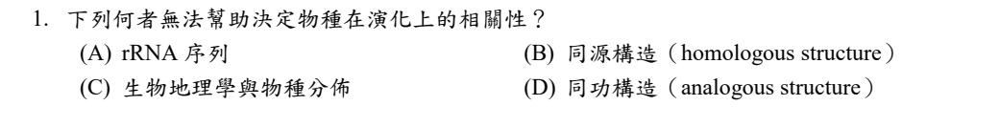
原卷PDF2 · 官方原答案PDF4 · 已核對生物釋疑PDF8–12
官方採計：D 原答案：D
未列於已取得113生物釋疑PDF8–12；依同年度原答案PDF4採計
主分類：Ch26 Phylogeny and the Tree of Life
26.2 / Sorting Homology from Analogy
目錄行1649；條目起始印刷頁558；實際目錄 PDF42
次分類：Ch26 Phylogeny and the Tree of Life
26.2 / Morphological and Molecular Homologies
目錄行1646；條目起始印刷頁558；實際目錄 PDF42
主分類理由：題目問演化親緣推論，判別同源與同功是直接決策步驟，主歸26.2 Sorting Homology from Analogy。
次分類理由：同章Morphological and Molecular Homologies支援rRNA及構造證據；不另以一般演化史作主分類。
科學說明：採D。同功相似可能源於趨同，不能單憑此推論近緣；rRNA同源序列、同源構造與生物地理均可提供歷史證據。「無法幫助」應讀為不能把同功當共享祖徵，而非否認其生態研究價值。
來源涵蓋範圍：Campbell正文支援分類原理；原題與官方釋疑的假設、資料及措辭限制另見科學說明。
教材正文：印刷558／PDF607、印刷559／PDF608
補充來源：不需另加課本外具名機制來源
另行比較：22.3一般同源證據或26.2親緣樹證據判讀？
題目要求推論親緣，558–559頁辨析同源/同功比演化證據概述更直接；rRNA同源作同章次條目，採D且不把同功當共享祖徵。
結論：證據確認，分類疑義已解決。完整覆核紀錄
Q02 · 10.3 / A Comparison of Chemiosmosis in Chloroplasts and Mitochondria 正式分類
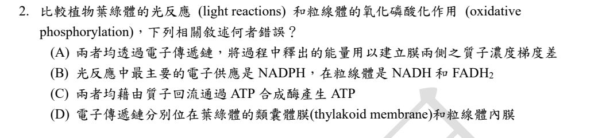
原卷PDF2 · 官方原答案PDF4 · 已核對生物釋疑PDF8–12
官方採計：B 原答案：B
未列於已取得113生物釋疑PDF8–12；依同年度原答案PDF4採計
主分類：Ch10 Photosynthesis
10.3 / A Comparison of Chemiosmosis in Chloroplasts and Mitochondria
目錄行662；條目起始印刷頁199；實際目錄 PDF37
次分類：Ch10 Photosynthesis
10.3 / Linear Electron Flow
目錄行656；條目起始印刷頁197；實際目錄 PDF37
次分類：Ch09 Cellular Respiration and Fermentation
9.4 / Chemiosmosis: The Energy-Coupling Mechanism
目錄行585；條目起始印刷頁175；實際目錄 PDF37
主分類理由：題幹直接比較葉綠體與粒線體化學滲透，10.3的比較條目比整章光合作用精確。
次分類理由：保留同章線性電子流及9.4化學滲透，分別核對電子來源及ATP形成。
科學說明：採B。葉綠體線性電子流由水供電子，NADPH是產物；粒線體以NADH、FADH2供電子。兩者均由膜上電子傳遞建立質子驅動力，再使質子沿梯度通過ATP合成酶。
來源涵蓋範圍：Campbell正文支援分類原理；原題與官方釋疑的假設、資料及措辭限制另見科學說明。
教材正文：印刷197／PDF246、印刷198／PDF247、印刷199／PDF248、印刷200／PDF249、印刷175／PDF224
補充來源：不需另加課本外具名機制來源
另行比較：光合作用整章、單純電子流或跨胞器化學滲透？
197–200及175頁確認兩種胞器質子梯度/ATP合成共有機制；主掛實際比較條目，葉綠體水供電子與粒線體NADH供電子分開，保留9章次分類。
結論：證據確認，分類疑義已解決。完整覆核紀錄
Q03 · 24.1 / The Biological Species Concept 正式分類
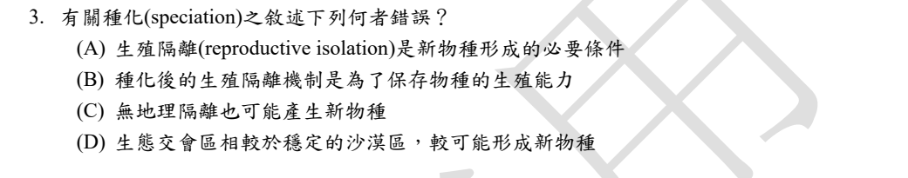
官方採計：B 原答案：B
維持原答案B
主分類：Ch24 The Origin of Species
24.1 / The Biological Species Concept
目錄行1488；條目起始印刷頁507；實際目錄 PDF41
次分類：Ch24 The Origin of Species
24.2 / Sympatric (“Same Country”) Speciation
目錄行1501；條目起始印刷頁513；實際目錄 PDF41
主分類理由：生殖隔離如何定義物種是判斷目的論錯句的核心，主歸24.1 The Biological Species Concept。
次分類理由：同域種化直接核對C，保存同章最小次條目。
科學說明：官方維持B。生殖隔離是演化過程的結果，不能目的論地說為了保存生殖能力。A限於生物學物種概念，不能普遍套於無性生殖或化石物種；D的生態交會區與沙漠比較缺乏條件，並非普遍速率定律。分類仍明確屬物種形成。
來源涵蓋範圍：Campbell正文支援分類原理；原題與官方釋疑的假設、資料及措辭限制另見科學說明。
教材正文：印刷507／PDF556、印刷508／PDF557、印刷510／PDF559、印刷513／PDF562、印刷515／PDF564
補充來源：不需另加課本外具名機制來源
另行比較：物種定義、生殖隔離或生態群聚交界？
507–515頁顯示生物學物種概念及同域種化直接支援判題；B目的論錯句主歸24.1，D區域比較缺條件不改掛生態章，官方維持B。
結論：證據確認，分類疑義已解決。完整覆核紀錄
Q04 · 22.3 / Homology 正式分類
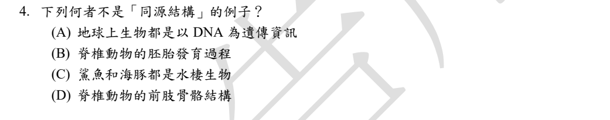
原卷PDF2 · 官方原答案PDF4 · 已核對生物釋疑PDF8–12
官方採計：C 原答案：C
未列於已取得113生物釋疑PDF8–12；依同年度原答案PDF4採計
主分類：Ch22 Descent with Modification: A Darwinian View of Life
22.3 / Homology
目錄行1412；條目起始印刷頁479；實際目錄 PDF41
主分類理由：三種共同祖源證據與棲地相似的區別，直接屬22.3 Homology。
次分類理由：無必要次條目；分子與胚胎同源已在此最小條目涵蓋，不把水棲字樣另計生態章。
科學說明：採C。共同使用DNA、脊椎動物胚胎相似與前肢骨骼模式支持同源；鯊魚與海豚同為水棲只描述生活環境，不能直接作同源構造例子。
來源涵蓋範圍：Campbell正文支援分類原理；原題與官方釋疑的假設、資料及措辭限制另見科學說明。
教材正文：印刷479／PDF528、印刷480／PDF529
補充來源：不需另加課本外具名機制來源
Q05 · 18.3 / Effects on mRNAs by MicroRNAs and Small Interfering RNAs 正式分類
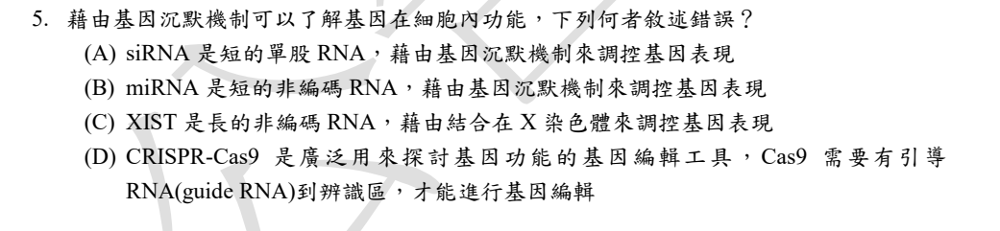
官方採計：A 原答案：A
維持原答案A
主分類：Ch18 Regulation of Gene Expression
18.3 / Effects on mRNAs by MicroRNAs and Small Interfering RNAs
目錄行1136；條目起始印刷頁379；實際目錄 PDF39
次分類：Ch18 Regulation of Gene Expression
18.3 / Chromatin Remodeling and Effects on Transcription by ncRNAs
目錄行1139；條目起始印刷頁380；實際目錄 PDF39
次分類：Ch15 The Chromosomal Basis of Inheritance
15.2 / X Inactivation in Female Mammals
目錄行948；條目起始印刷頁300；實際目錄 PDF39
次分類：Ch17 Gene Expression: From Gene to Protein
17.5 / Using CRISPR to Edit Genes and Correct Disease-Causing Mutations
目錄行1091；條目起始印刷頁360；實際目錄 PDF39
主分類理由：錯句聚焦siRNA鏈狀態及沉默作用，主歸18.3 Effects on mRNAs by MicroRNAs and Small Interfering RNAs。
次分類理由：同章ncRNA染色質調控及15.2 X失活對應XIST，17.5 CRISPR條目對應Cas9引導RNA；這兩種機制不冒充RNAi。
科學說明：官方維持A。釋疑以siRNA雙股形式判錯；本地12e區分多為雙股的前體與處理後小RNA，RISC作用時保留單股引導鏈，原始研究亦能以單股反義siRNA引導切割。因此不能把「siRNA在任何階段均非單股」當科學結論。miRNA、XIST與CRISPR各自機制分開。
來源涵蓋範圍：Campbell支援所列分類框架；具名機制或科學界線由列示原始研究/官方來源補足。
教材正文：印刷379／PDF428、印刷380／PDF429、印刷381／PDF430、印刷300／PDF349、印刷360／PDF409、印刷361／PDF410
補充來源：S01
另行比較：所有siRNA都是雙股，抑或分前體和作用階段？
379–381頁與Martinez原始研究區分前體、單股guide及染色質ncRNA；XIST另對300頁，CRISPR另對360–361頁。正式採A但保留單股作用機制，主分類仍RNAi。
結論：證據確認，分類疑義已解決。完整覆核紀錄
Q06 · 6.3 / The Nucleus: Information Central 正式分類
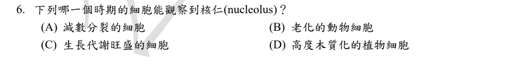
原卷PDF2 · 官方原答案PDF4 · 釋疑PDF8、釋疑PDF9
官方採計：C 原答案：C
維持原答案C
主分類：Ch06 A Tour of the Cell
6.3 / The Nucleus: Information Central
目錄行333；條目起始印刷頁102；實際目錄 PDF36
次分類：Ch06 A Tour of the Cell
6.3 / Ribosomes: Protein Factories
目錄行336；條目起始印刷頁102；實際目錄 PDF36
主分類理由：核仁的rRNA合成與核糖體次單元組裝，最小對應6.3 The Nucleus: Information Central。
次分類理由：同章Ribosomes: Protein Factories補充活躍蛋白質合成的需求。
科學說明：官方維持C。代謝與蛋白質合成活躍的細胞常有明顯核仁；原題問「能觀察」比釋疑的「最容易觀察」寬。核仁是否存在仍依分裂階段及細胞類型，不能據此斷言所有老化或減數分裂細胞全程無核仁，也不能把所有木質化細胞都當死細胞。
來源涵蓋範圍：Campbell正文支援分類原理；原題與官方釋疑的假設、資料及措辭限制另見科學說明。
教材正文：印刷102／PDF151、印刷103／PDF152
補充來源：不需另加課本外具名機制來源
另行比較：核仁功能還是細胞衰老/減數分裂？
102–103頁rRNA及核糖體次單元組裝直接回答，原題能觀察與釋疑最易觀察的範圍不同；以核仁功能主條目、核糖體需求次條目確認C，不虛構老化細胞一概無核仁。
結論：證據確認，分類疑義已解決。完整覆核紀錄
Q07 · 7.2 / Transport Proteins 正式分類
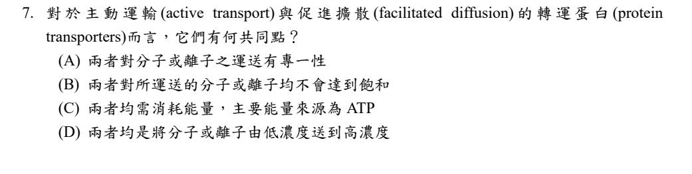
原卷PDF2 · 官方原答案PDF4 · 已核對生物釋疑PDF8–12
官方採計：A 原答案：A
未列於已取得113生物釋疑PDF8–12；依同年度原答案PDF4採計
主分類：Ch07 Membrane Structure and Function
7.2 / Transport Proteins
目錄行433；條目起始印刷頁132；實際目錄 PDF36
次分類：Ch07 Membrane Structure and Function
7.3 / Facilitated Diffusion: Passive Transport Aided by Proteins
目錄行443；條目起始印刷頁135；實際目錄 PDF36
次分類：Ch07 Membrane Structure and Function
7.4 / The Need for Energy in Active Transport
目錄行450；條目起始印刷頁136；實際目錄 PDF36
主分類理由：共同點是轉運蛋白對溶質的選擇性，主歸7.2 Transport Proteins。
次分類理由：促進擴散與主動運輸能量需求各有獨立最小條目，兩者同章仍保留。
科學說明：採A。兩種載體均有專一性；載體數有限可出現飽和。促進擴散沿電化學梯度不直接耗ATP，主動運輸利用能量逆梯度；並非所有主動運輸都直接水解ATP。
來源涵蓋範圍：Campbell正文支援分類原理；原題與官方釋疑的假設、資料及措辭限制另見科學說明。
教材正文：印刷132／PDF181、印刷135／PDF184、印刷136／PDF185
補充來源：不需另加課本外具名機制來源
另行比較：主動運輸能量是否能作兩種載體的共同點？
132、135–136頁確認選擇性才是共同點；分列促進擴散與ATP能量條目，兩者同章最小次條目保留，章級不重複計數。
結論：證據確認，分類疑義已解決。完整覆核紀錄
Q08 · 50.5 / Vertebrate Skeletal Muscle 正式分類
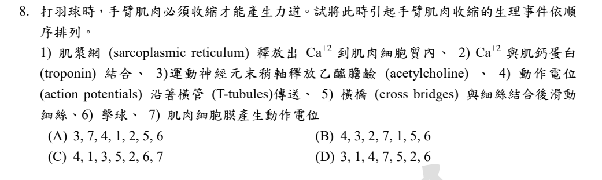
原卷PDF3 · 官方原答案PDF4 · 已核對生物釋疑PDF8–12
官方採計：A 原答案：A
未列於已取得113生物釋疑PDF8–12；依同年度原答案PDF4採計
主分類：Ch50 Sensory and Motor Mechanisms
50.5 / Vertebrate Skeletal Muscle
目錄行3381；條目起始印刷頁1126；實際目錄 PDF49
主分類理由：神經肌肉接合到Ca2+啟動橫橋的順序完整位於50.5 Vertebrate Skeletal Muscle。
次分類理由：無必要次條目；此條目正文已直接描述ACh、T管、肌漿網與troponin的連續事件。
科學說明：採A，順序3→7→4→1→2→5→6：ACh釋放、肌膜動作電位、T管傳播、肌漿網釋鈣、鈣結合troponin、橫橋循環、擊球。原題Ca+2寫法保留。
來源涵蓋範圍：Campbell正文支援分類原理；原題與官方釋疑的假設、資料及措辭限制另見科學說明。
教材正文：印刷1127／PDF1176、印刷1128／PDF1177、印刷1129／PDF1178
補充來源：不需另加課本外具名機制來源
另行比較：一般動作電位或整段骨骼肌收縮順序？
1127–1129頁已連續描述ACh、T管、肌漿網、Ca2+與troponin；3→7→4→1→2→5→6核對原A，不額外拆散同一收縮過程。
結論：證據確認，分類疑義已解決。完整覆核紀錄
Q09 · 50.5 / Vertebrate Skeletal Muscle 正式分類
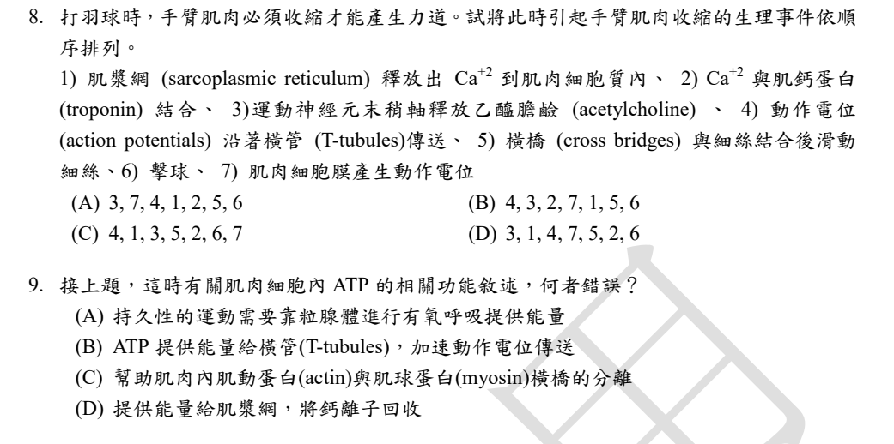
原卷PDF3 · 官方原答案PDF4 · 已核對生物釋疑PDF8–12
官方採計：B 原答案：B
未列於已取得113生物釋疑PDF8–12；依同年度原答案PDF4採計
主分類：Ch50 Sensory and Motor Mechanisms
50.5 / Vertebrate Skeletal Muscle
目錄行3381；條目起始印刷頁1126；實際目錄 PDF49
次分類：Ch48 Neurons, Synapses, and Signaling
48.3 / Conduction of Action Potentials
目錄行3212；條目起始印刷頁1075；實際目錄 PDF48
主分類理由：檢驗ATP在肌球蛋白循環與肌漿網回收Ca2+中的功能，主歸50.5骨骼肌。
次分類理由：48.3動作電位傳導補充B錯誤所在；Q8背景原圖與題文一併保留。
科學說明：採B。ATP結合使myosin離開actin，水解使頭部重新蓄能；Ca2+泵耗能回收鈣，持久運動靠氧化代謝。T管動作電位靠離子通道與膜電性傳播；ATP維持梯度等間接作用不等於直接供能加速T管訊號。
來源涵蓋範圍：Campbell正文支援分類原理；原題與官方釋疑的假設、資料及措辭限制另見科學說明。
教材正文：印刷1127／PDF1176、印刷1128／PDF1177、印刷1129／PDF1178、印刷1130／PDF1179、印刷1075／PDF1124
補充來源：不需另加課本外具名機制來源
另行比較：ATP與T管直接供能混同，或橫橋/鈣回收？
1075與1127–1130頁比較電訊號傳播、myosinATP循環及Ca2+回收，B混淆直接與間接能量作用。Q9題圖及文字含Q8完整背景，主50章、次48章。
結論：證據確認，分類疑義已解決。完整覆核紀錄
Q10 · 50.3 / The Vertebrate Visual System 正式分類
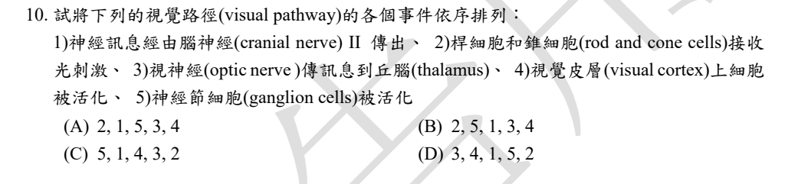
原卷PDF3 · 官方原答案PDF4 · 已核對生物釋疑PDF8–12
官方採計：B 原答案：B
未列於已取得113生物釋疑PDF8–12；依同年度原答案PDF4採計
主分類：Ch50 Sensory and Motor Mechanisms
50.3 / The Vertebrate Visual System
目錄行3364；條目起始印刷頁1119；實際目錄 PDF49
主分類理由：視網膜到視神經及視覺中樞的路徑直接位於50.3 The Vertebrate Visual System。
次分類理由：無另列次章；腦部路徑已包含於該條目。
科學說明：採B，2→5→1→3→4。光感受器訊息經雙極細胞等網路到神經節細胞，再由其軸突組成視神經、經丘腦中繼到視皮層。題列1與3都是視神經路徑的不同敘述，並非兩條不同腦神經。
來源涵蓋範圍：Campbell正文支援分類原理；原題與官方釋疑的假設、資料及措辭限制另見科學說明。
教材正文：印刷1119／PDF1168、印刷1120／PDF1169、印刷1121／PDF1170、印刷1122／PDF1171
補充來源：不需另加課本外具名機制來源
另行比較：視神經、神經節細胞與皮層的序列是否倒置？
1119–1122頁路徑由受器到神經節軸突、丘腦再視皮層，確認2→5→1→3→4與B；視神經相關兩敘述按題定義保留，不當成兩條腦神經。
結論：證據確認，分類疑義已解決。完整覆核紀錄
Q11 · 49.1 / The Peripheral Nervous System 正式分類
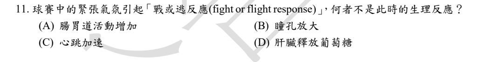
原卷PDF3 · 官方原答案PDF4 · 已核對生物釋疑PDF8–12
官方採計：A 原答案：A
未列於已取得113生物釋疑PDF8–12；依同年度原答案PDF4採計
主分類：Ch49 Nervous Systems
49.1 / The Peripheral Nervous System
目錄行3245；條目起始印刷頁1088；實際目錄 PDF48
次分類：Ch45 Hormones and the Endocrine System
45.3 / Adrenal Hormones: Response to Stress
目錄行3039；條目起始印刷頁1012；實際目錄 PDF47
主分類理由：戰或逃的器官效應是交感周邊神經調節，主歸49.1 The Peripheral Nervous System。
次分類理由：45.3腎上腺壓力反應補充肝臟燃料動員及內分泌協同。
科學說明：採A。交感作用使瞳孔放大、心跳加速、肝臟釋葡萄糖，並抑制胃腸活動；不是增加腸胃活動。
來源涵蓋範圍：Campbell正文支援分類原理；原題與官方釋疑的假設、資料及措辭限制另見科學說明。
教材正文：印刷1088／PDF1137、印刷1089／PDF1138、印刷1012／PDF1061、印刷1013／PDF1062
補充來源：不需另加課本外具名機制來源
另行比較：交感神經本身或腎上腺內分泌應為主？
1088–1089頁直接列交感器官效應，1012–1013頁補燃料動員；腸胃活動增加不符，主49.1、次45.3、答案A。
結論：證據確認，分類疑義已解決。完整覆核紀錄
Q12 · 49.1 / The Peripheral Nervous System 正式分類
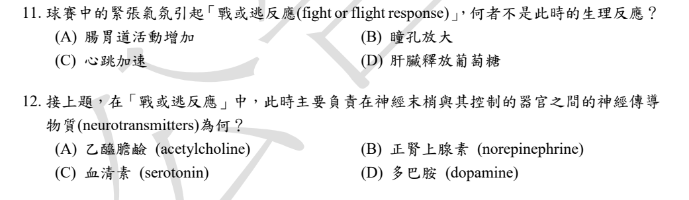
原卷PDF3 · 官方原答案PDF4 · 已核對生物釋疑PDF8–12
官方採計：B 原答案：B
未列於已取得113生物釋疑PDF8–12；依同年度原答案PDF4採計
主分類：Ch49 Nervous Systems
49.1 / The Peripheral Nervous System
目錄行3245；條目起始印刷頁1088；實際目錄 PDF48
次分類：Ch48 Neurons, Synapses, and Signaling
48.4 / Neurotransmitters
目錄行3231；條目起始印刷頁1080；實際目錄 PDF48
主分類理由：題目指定神經末梢到器官，49.1周邊神經正文直接區分節前與節後傳遞物。
次分類理由：48.4 Neurotransmitters支援正腎上腺素的化學傳遞角色；Q11背景保留。
科學說明：採B。多數交感節後神經元釋放norepinephrine；交感節前主要用ACh，部分節後通路也例外。不能把血中腎上腺髓質激素與所有末梢傳遞物混為一談。
來源涵蓋範圍：Campbell正文支援分類原理；原題與官方釋疑的假設、資料及措辭限制另見科學說明。
教材正文：印刷1089／PDF1138、印刷1080／PDF1129、印刷1081／PDF1130
補充來源：不需另加課本外具名機制來源
另行比較：節前ACh、節後NE與腎上腺血中激素何者符合題幹？
1089及1080–1081頁確認多數交感節後末梢用NE，答案B；保留例外及Q11背景，主周邊神經、次神經傳遞物。
結論：證據確認，分類疑義已解決。完整覆核紀錄
Q13 · 18.1 / Operons: The Basic Concept 正式分類
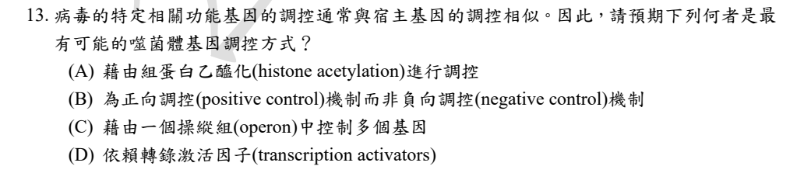
原卷PDF3 · 官方原答案PDF4 · 已核對生物釋疑PDF8–12
官方採計：C 原答案：C
未列於已取得113生物釋疑PDF8–12；依同年度原答案PDF4採計
主分類：Ch18 Regulation of Gene Expression
18.1 / Operons: The Basic Concept
目錄行1107；條目起始印刷頁366；實際目錄 PDF39
次分類：Ch19 Viruses
19.2 / Replicative Cycles of Phages
目錄行1199；條目起始印刷頁402；實際目錄 PDF40
主分類理由：最可能的多基因共同轉錄調控是operon，主歸18.1 Operons: The Basic Concept。
次分類理由：19.2噬菌體複製週期提供病毒宿主與抑制蛋白背景，避免只因病毒字樣歸整章病毒。
科學說明：採C。細菌宿主可用單一啟動子共同調控多基因，噬菌體也有協調表現。病毒可同時使用正負向調控，故B排他敘述不成立；不能把D轉錄活化因子斷言為噬菌體完全不存在，只是C最符合題意。
來源涵蓋範圍：Campbell正文支援分類原理；原題與官方釋疑的假設、資料及措辭限制另見科學說明。
教材正文：印刷366／PDF415、印刷367／PDF416、印刷368／PDF417、印刷403／PDF452
補充來源：不需另加課本外具名機制來源
另行比較：病毒名詞是否足以令主分類變19章？
366–368頁operon共同轉錄調控最切題，403頁提供噬菌體抑制背景；答案C，不把D轉錄活化因子當噬菌體完全沒有的定律。
結論：證據確認，分類疑義已解決。完整覆核紀錄
Q14 · 6.4 / The Endomembrane System: A Review 正式分類
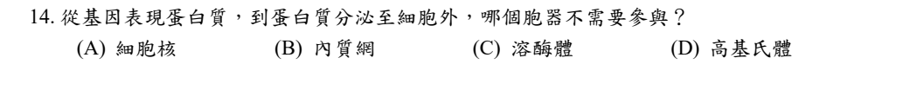
原卷PDF3 · 官方原答案PDF4 · 已核對生物釋疑PDF8–12
官方採計：C 原答案：C
未列於已取得113生物釋疑PDF8–12；依同年度原答案PDF4採計
主分類：Ch06 A Tour of the Cell
6.4 / The Endomembrane System: A Review
目錄行355；條目起始印刷頁108；實際目錄 PDF36
次分類：Ch06 A Tour of the Cell
6.4 / Lysosomes: Digestive Compartments
目錄行349；條目起始印刷頁107；實際目錄 PDF36
次分類：Ch17 Gene Expression: From Gene to Protein
17.4 / Completing and Targeting the Functional Protein
目錄行1075；條目起始印刷頁352；實際目錄 PDF39
主分類理由：分泌蛋白經內膜系統運送，主歸6.4 The Endomembrane System: A Review。
次分類理由：同章溶酶體消化功能及17.4蛋白定位分別支持排除C與ER訊號肽。
科學說明：採C。一般真核分泌路徑為核內轉錄、核糖體/粗糙ER合成、Golgi加工及囊泡胞吐；溶酶體主要細胞內消化，並非此一般路徑必經站。
來源涵蓋範圍：Campbell正文支援分類原理；原題與官方釋疑的假設、資料及措辭限制另見科學說明。
教材正文：印刷108／PDF157、印刷109／PDF158、印刷107／PDF156、印刷353／PDF402、印刷354／PDF403
補充來源：不需另加課本外具名機制來源
另行比較：溶酶體是否為一般蛋白分泌必經站？
107–109及353–354頁區分ER/Golgi分泌與溶酶體消化；C確認，以內膜系統回顧為主、消化與蛋白定位為次，不移除一般真核核內轉錄前提。
結論：證據確認，分類疑義已解決。完整覆核紀錄
Q15 · 42.3 / Capillary Function 正式分類
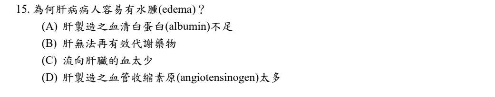
原卷PDF4 · 官方原答案PDF4 · 已核對生物釋疑PDF8–12
官方採計：A 原答案：A
未列於已取得113生物釋疑PDF8–12；依同年度原答案PDF4採計
主分類：Ch42 Circulation and Gas Exchange
42.3 / Capillary Function
目錄行2792；條目起始印刷頁932；實際目錄 PDF46
次分類：Ch42 Circulation and Gas Exchange
42.4 / Blood Composition and Function
目錄行2802；條目起始印刷頁934；實際目錄 PDF46
主分類理由：白蛋白不足改變微血管兩側滲透力並促進組織液累積，主歸42.3 Capillary Function。
次分類理由：42.4血液成分條目直接提供albumin與血漿滲透平衡作用。
科學說明：採A。白蛋白不足使血漿膠體滲透壓下降，利於液體留在組織間。肝病水腫可有其他機制，本題所給選項以白蛋白不足最直接；不把單一機制外推成全部肝病水腫唯一原因。
來源涵蓋範圍：Campbell正文支援分類原理；原題與官方釋疑的假設、資料及措辭限制另見科學說明。
教材正文：印刷932／PDF981、印刷933／PDF982、印刷934／PDF983
補充來源：不需另加課本外具名機制來源
另行比較：血液組成或微血管液體交換為判題核心？
932–934頁白蛋白與滲透力證據同時可核實；題問水腫機制，主Capillary Function，血液組成為次。採A，其他肝病機制並未排除。
結論：證據確認，分類疑義已解決。完整覆核紀錄
Q16 · 42.2 / The Mammalian Heart: A Closer Look 正式分類
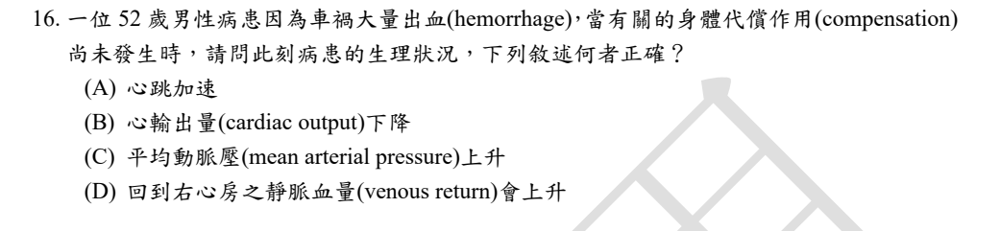
原卷PDF4 · 官方原答案PDF4 · 已核對生物釋疑PDF8–12
官方採計：B 原答案：B
未列於已取得113生物釋疑PDF8–12；依同年度原答案PDF4採計
主分類：Ch42 Circulation and Gas Exchange
42.2 / The Mammalian Heart: A Closer Look
目錄行2773；條目起始印刷頁926；實際目錄 PDF46
次分類：Ch42 Circulation and Gas Exchange
42.3 / Blood Pressure
目錄行2789；條目起始印刷頁930；實際目錄 PDF46
主分類理由：未代償出血導致回心血量與搏出量下降，直接考42.2 The Mammalian Heart: A Closer Look中的心輸出量。
次分類理由：42.3 Blood Pressure連結流量、血量及血壓，不以反射性心跳加速作本題主因。
科學說明：採B。循環血量減少使靜脈回流及心室充盈降低，搏出量下降，心輸出量下降；題幹已排除代償，不能選反射心搏加速。
來源涵蓋範圍：Campbell正文支援分類原理；原題與官方釋疑的假設、資料及措辭限制另見科學說明。
教材正文：印刷927／PDF976、印刷930／PDF979、印刷931／PDF980、印刷932／PDF981
補充來源：不需另加課本外具名機制來源
另行比較：出血時代償心搏加速能否取代原題條件？
927、930–932頁心輸出量/搏出量及壓力框架支援B；依題幹未代償處理，主心臟功能而非自主反射。
結論：證據確認，分類疑義已解決。完整覆核紀錄
Q17 · 44.3 / Survey of Excretory Systems 正式分類
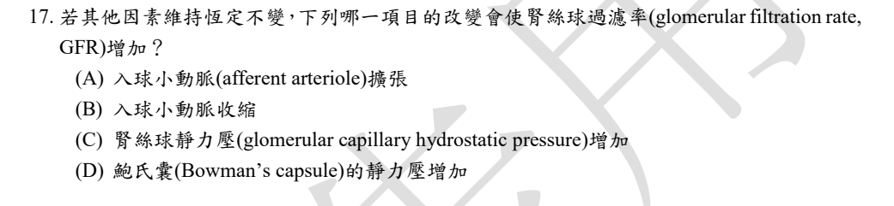
官方採計：A或C 原答案：C
原C，官方更正為A或C
主分類：Ch44 Osmoregulation and Excretion
44.3 / Survey of Excretory Systems
目錄行2967；條目起始印刷頁984；實際目錄 PDF47
次分類：Ch44 Osmoregulation and Excretion
44.4 / From Blood Filtrate to Urine: A Closer Look
目錄行2974；條目起始印刷頁987；實際目錄 PDF47
主分類理由：腎絲球壓力形成濾液屬44.3 Survey of Excretory Systems的脊椎動物腎與腎元最小條目。
次分類理由：44.4 From Blood Filtrate to Urine補充鮑氏囊及後續濾液處理；入球血管細部由官方教科書補足。
科學說明：原答案表C，官方更正A或C。入球擴張在其他條件固定時可提高腎絲球血流與靜水壓；腎絲球靜水壓上升增加淨過濾力，鮑氏囊壓力上升則抵抗過濾。不能把提高GFR與所有調節條件下的結果混同。
來源涵蓋範圍：Campbell支援所列分類框架；具名機制或科學界線由列示原始研究/官方來源補足。
教材正文：印刷985／PDF1034、印刷986／PDF1035、印刷987／PDF1036、印刷988／PDF1037
補充來源：S02
另行比較：Campbell腎元框架是否直接列全套過濾壓公式？
985–988頁核實腎絲球、鮑氏囊與濾液流程；入球阻力及淨過濾壓以OpenStax公式另證，不冒稱全來自Campbell。113釋疑PDF9將C改A或C，雙答案照存。
結論：證據確認，分類疑義已解決。完整覆核紀錄
Q18 · 44.4 / Solute Gradients and Water Conservation 正式分類
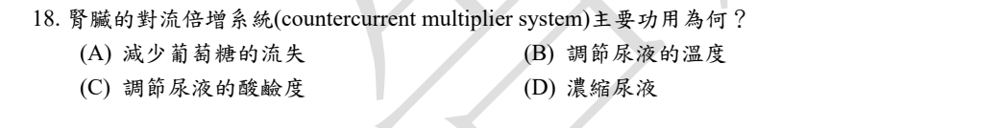
原卷PDF4 · 官方原答案PDF4 · 已核對生物釋疑PDF8–12
官方採計：D 原答案：D
未列於已取得113生物釋疑PDF8–12；依同年度原答案PDF4採計
主分類：Ch44 Osmoregulation and Excretion
44.4 / Solute Gradients and Water Conservation
目錄行2977；條目起始印刷頁989；實際目錄 PDF47
主分類理由：逆流倍增建立髓質溶質梯度以保水，主歸44.4 Solute Gradients and Water Conservation。
次分類理由：無必要次條目；不是葡萄糖重吸收、尿溫或酸鹼調節題。
科學說明：採D。Henle環水與鹽通透性差異建立髓質高滲梯度，集合管依水通透性使尿液濃縮；直小血管逆流交換協助維持梯度，與Henle環倍增的角色不同。
來源涵蓋範圍：Campbell正文支援分類原理；原題與官方釋疑的假設、資料及措辭限制另見科學說明。
教材正文：印刷989／PDF1038、印刷990／PDF1039、印刷991／PDF1040
補充來源：不需另加課本外具名機制來源
另行比較：逆流倍增、直小血管逆流交換與酸鹼調節何者正確？
989–991頁髓質梯度與保水直接支持D；區分Henle環建立梯度和直小血管維持梯度，主用44.4最小梯度條目。
結論：證據確認，分類疑義已解決。完整覆核紀錄
Q19 · 42.6 / Control of Breathing in Humans 正式分類
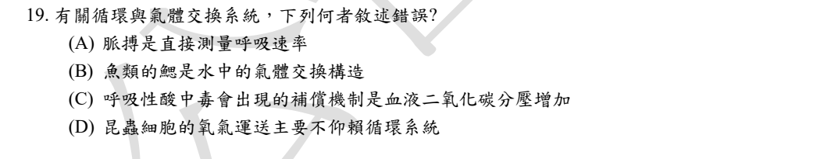
官方採計：A或C 原答案：C
原C，官方更正為A或C
主分類：Ch42 Circulation and Gas Exchange
42.6 / Control of Breathing in Humans
目錄行2843；條目起始印刷頁946；實際目錄 PDF46
次分類：Ch42 Circulation and Gas Exchange
42.3 / Blood Pressure
目錄行2789；條目起始印刷頁930；實際目錄 PDF46
次分類：Ch44 Osmoregulation and Excretion
44.4 / From Blood Filtrate to Urine: A Closer Look
目錄行2974；條目起始印刷頁987；實際目錄 PDF47
次分類：Ch42 Circulation and Gas Exchange
42.5 / Gills in Aquatic Animals
目錄行2821；條目起始印刷頁940；實際目錄 PDF46
次分類：Ch42 Circulation and Gas Exchange
42.5 / Tracheal Systems in Insects
目錄行2824；條目起始印刷頁941；實際目錄 PDF46
主分類理由：原答案表C及其錯誤命題聚焦CO2與呼吸調節，主歸42.6 Control of Breathing in Humans。
次分類理由：保留42.3脈搏、42.5魚鰓及昆蟲氣管、44.4酸鹼處理，因本題官方認定A與C均錯。
科學說明：原答案表PDF4列C，釋疑PDF9文字卻稱原公告A，最終均採A或C，兩份來源差異保留。脈搏反映心搏而非呼吸頻率；CO2增加加重呼吸性酸中毒。釋疑說增加通氣是補償，應區分恢復通氣與典型腎性代償保留HCO3−，不能以該句否認腎性代償。
來源涵蓋範圍：Campbell支援所列分類框架；具名機制或科學界線由列示原始研究/官方來源補足。
教材正文：印刷946／PDF995、印刷947／PDF996、印刷930／PDF979、印刷987／PDF1036、印刷988／PDF1037、印刷940／PDF989、印刷941／PDF990
補充來源：S03
另行比較：原答案C、釋疑稱原A，與呼吸性酸中毒補償是否一致？
原答案PDF4實為C，釋疑PDF9最終A或C；946–947、930、987–988、940–941頁逐項核對呼吸、脈搏、腎、鰓與氣管。OpenStax補腎性代償；主呼吸控制並保存所有必要次條目，來源衝突不抹除。
結論：證據確認，分類疑義已解決。完整覆核紀錄
Q20 · 43.4 / Exaggerated, Self-Directed, and Diminished Immune Responses 正式分類
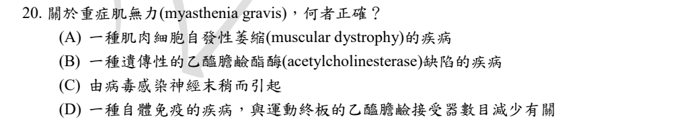
原卷PDF4 · 官方原答案PDF4 · 已核對生物釋疑PDF8–12
官方採計：D 原答案：D
未列於已取得113生物釋疑PDF8–12；依同年度原答案PDF4採計
主分類：Ch43 The Immune System
43.4 / Exaggerated, Self-Directed, and Diminished Immune Responses
目錄行2924；條目起始印刷頁970；實際目錄 PDF47
次分類：Ch50 Sensory and Motor Mechanisms
50.5 / Vertebrate Skeletal Muscle
目錄行3381；條目起始印刷頁1126；實際目錄 PDF49
主分類理由：本題辨認自體免疫病因，主歸43.4 Exaggerated, Self-Directed, and Diminished Immune Responses。
次分類理由：50.5骨骼肌正文具名myasthenia gravis與ACh受體抗體，為直接疾病機制次條目。
科學說明：採D。典型重症肌無力為針對神經肌肉接合相關蛋白的自體免疫疾病，題指ACh受體抗體使有效受體/傳遞下降；不是題列肌肉自發性萎縮、遺傳性AChE缺陷或病毒感染。
來源涵蓋範圍：Campbell正文支援分類原理；原題與官方釋疑的假設、資料及措辭限制另見科學說明。
教材正文：印刷970／PDF1019、印刷971／PDF1020、印刷1128／PDF1177、印刷1129／PDF1178
補充來源：不需另加課本外具名機制來源
另行比較：重症肌無力應主掛肌肉收縮還是免疫失衡？
970–971頁自體免疫框架與1128–1129頁具名ACh受體抗體病變連接；題問病因，主免疫失衡、次骨骼肌，答案D。
結論：證據確認，分類疑義已解決。完整覆核紀錄
Q21 · 42.5 / Lungs 正式分類
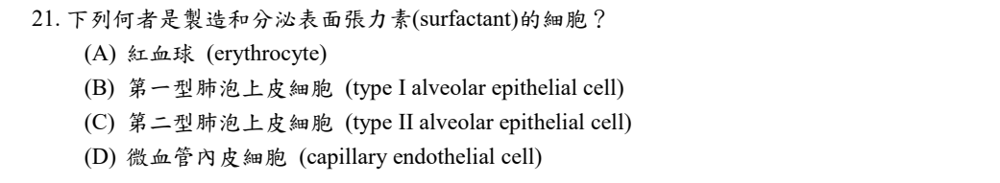
原卷PDF4 · 官方原答案PDF4 · 已核對生物釋疑PDF8–12
官方採計：C 原答案：C
未列於已取得113生物釋疑PDF8–12；依同年度原答案PDF4採計
主分類：Ch42 Circulation and Gas Exchange
42.5 / Lungs
目錄行2827；條目起始印刷頁942；實際目錄 PDF46
主分類理由：表面張力素與肺泡維持是42.5 Lungs的最小條目。
次分類理由：不另列全章細胞生物學；本地正文描述surfactant功能，第二型細胞名稱以OpenStax直接核對。
科學說明：採C。第二型肺泡細胞合成與分泌肺表面張力素；第一型主要形成薄氣體交換面，巨噬細胞負責清除異物。
來源涵蓋範圍：Campbell支援所列分類框架；具名機制或科學界線由列示原始研究/官方來源補足。
教材正文：印刷942／PDF991、印刷943／PDF992
補充來源：S04
另行比較：肺泡功能有證據，但第二型細胞名是否出自本地正文？
942–943頁surfactant降低表面張力及肺泡功能可核實；第二型細胞直接引用OpenStax，未冒稱Campbell具名。答案C、主Lungs。
結論：證據確認，分類疑義已解決。完整覆核紀錄
Q22 · 15.5 / Inheritance of Organelle Genes 正式分類
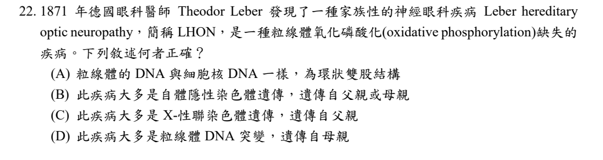
原卷PDF5 · 官方原答案PDF4 · 已核對生物釋疑PDF8–12
官方採計：D 原答案：D
未列於已取得113生物釋疑PDF8–12；依同年度原答案PDF4採計
主分類：Ch15 The Chromosomal Basis of Inheritance
15.5 / Inheritance of Organelle Genes
目錄行984；條目起始印刷頁311；實際目錄 PDF39
主分類理由：核心為LHON母系遺傳，15.5 Inheritance of Organelle Genes正文直接具名LHON。
次分類理由：無必要次章；氧化磷酸化是疾病背景，題目主要辨認遺傳來源。
科學說明：採D。粒線體DNA缺陷可造成LHON，粒線體通常母系傳遞。人類核染色體為線形DNA，不能與粒線體DNA同稱環狀；此題不是自體隱性或由父親傳來的X連鎖遺傳。
來源涵蓋範圍：Campbell正文支援分類原理；原題與官方釋疑的假設、資料及措辭限制另見科學說明。
教材正文：印刷311／PDF360、印刷312／PDF361
補充來源：不需另加課本外具名機制來源
另行比較：LHON應主掛粒線體呼吸還是胞器遺傳？
311–312頁Inheritance of Organelle Genes直接具名LHON與母系傳遞；題問缺陷遺傳來源，主15.5、答案D，不以疾病能量背景新增9章。
結論：證據確認，分類疑義已解決。完整覆核紀錄
Q23 · 43.3 / Cytotoxic T Cells: A Response to Infected Host Cells 正式分類
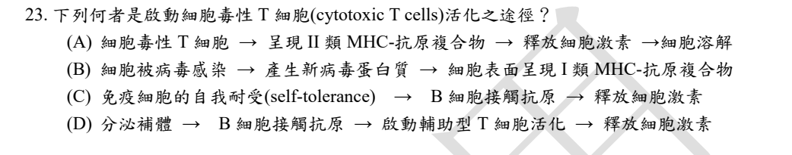
原卷PDF5 · 官方原答案PDF4 · 已核對生物釋疑PDF8–12
官方採計：B 原答案：B
未列於已取得113生物釋疑PDF8–12；依同年度原答案PDF4採計
主分類：Ch43 The Immune System
43.3 / Cytotoxic T Cells: A Response to Infected Host Cells
目錄行2902；條目起始印刷頁966；實際目錄 PDF47
次分類：Ch43 The Immune System
43.2 / Antigen Recognition by T Cells
目錄行2886；條目起始印刷頁959；實際目錄 PDF47
主分類理由：感染細胞的I類MHC對應43.3 Cytotoxic T Cells: A Response to Infected Host Cells。
次分類理由：43.2 Antigen Recognition by T Cells提供TCR辨認胜肽-MHC的前提。
科學說明：採B。感染細胞可呈現內生病毒胜肽於I類MHC，供CD8 T細胞識別；II類MHC主要連到CD4輔助T細胞。初始細胞毒性T細胞完整活化還需要抗原呈現細胞及協同訊號，B是最合適路徑摘要，並非聲稱一個感染細胞單獨足以完整啟動初始T細胞。
來源涵蓋範圍：Campbell正文支援分類原理；原題與官方釋疑的假設、資料及措辭限制另見科學說明。
教材正文：印刷966／PDF1015、印刷967／PDF1016、印刷959／PDF1008、印刷960／PDF1009
補充來源：不需另加課本外具名機制來源
另行比較：I類MHC展示與初始CD8細胞完整活化是否相同？
959–960、966–967頁分開TCR識別及細胞毒作用；B是最適路徑，但協同訊號/初始活化條件保留。主細胞毒T、同章次抗原辨認。
結論：證據確認，分類疑義已解決。完整覆核紀錄
Q24 · 11.2 / Intracellular Receptors 正式分類
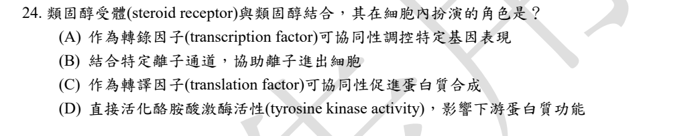
原卷PDF5 · 官方原答案PDF4 · 已核對生物釋疑PDF8–12
官方採計：A 原答案：A
未列於已取得113生物釋疑PDF8–12；依同年度原答案PDF4採計
主分類：Ch11 Cell Communication
11.2 / Intracellular Receptors
目錄行711；條目起始印刷頁220；實際目錄 PDF38
次分類：Ch18 Regulation of Gene Expression
18.2 / Regulation of Transcription Initiation
目錄行1126；條目起始印刷頁373；實際目錄 PDF39
主分類理由：類固醇受體進入調控DNA的角色直接位於11.2 Intracellular Receptors。
次分類理由：18.2 Regulation of Transcription Initiation含分散基因共同激素反應元件與協同轉錄調控。
科學說明：採A。典型類固醇-受體複合體可作轉錄因子，調節含適當控制元件的基因；不同於離子通道、翻譯因子或受體酪胺酸激酶的直接作用。
來源涵蓋範圍：Campbell正文支援分類原理；原題與官方釋疑的假設、資料及措辭限制另見科學說明。
教材正文：印刷220／PDF269、印刷221／PDF270、印刷375／PDF424、印刷376／PDF425
補充來源：不需另加課本外具名機制來源
另行比較：類固醇受體是轉錄因子、翻譯因子或膜受體？
220–221及375–376頁確認胞內受體及激素反應元件共同調控；答案A，主11.2直接受體機制、次18.2轉錄。
結論：證據確認，分類疑義已解決。完整覆核紀錄
Q25 · 42.7 / Respiratory Pigments 正式分類
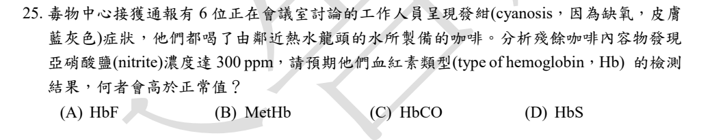
原卷PDF5 · 官方原答案PDF4 · 已核對生物釋疑PDF8–12
官方採計：B 原答案：B
未列於已取得113生物釋疑PDF8–12；依同年度原答案PDF4採計
主分類：Ch42 Circulation and Gas Exchange
42.7 / Respiratory Pigments
目錄行2853；條目起始印刷頁947；實際目錄 PDF46
主分類理由：血紅素攜氧功能受氧化改變，主歸42.7 Respiratory Pigments。
次分類理由：無必要次章；亞硝酸鹽造成MetHb的具名毒理機制另引ATSDR，不冒充Campbell正文具名內容。
科學說明：採B。亞硝酸鹽可將Hb中的Fe2+氧化為Fe3+形成MetHb，降低正常攜氧能力並造成發紺；與胎兒HbF、CO結合HbCO及鐮刀型HbS不同。
來源涵蓋範圍：Campbell支援所列分類框架；具名機制或科學界線由列示原始研究/官方來源補足。
教材正文：印刷947／PDF996、印刷948／PDF997、印刷949／PDF998
補充來源：S05
另行比較：HbS、HbF、HbCO或MetHb的區別？
947–949頁呼吸色素攜氧框架，ATSDR另直接支持亞硝酸鹽氧化Fe2+成Fe3+；答案B，具名毒理不冒充本地正文。
結論：證據確認，分類疑義已解決。完整覆核紀錄
Q26 · 13.4 / Origins of Genetic Variation Among Offspring 正式分類
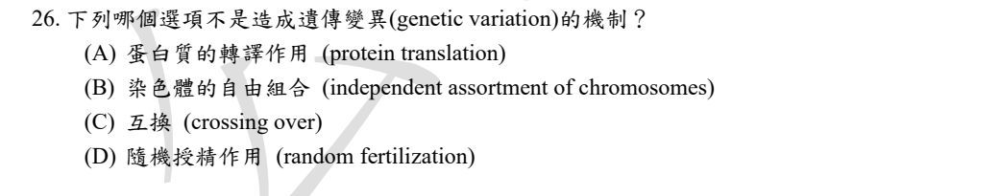
原卷PDF5 · 官方原答案PDF4 · 已核對生物釋疑PDF8–12
官方採計：A 原答案：A
未列於已取得113生物釋疑PDF8–12；依同年度原答案PDF4採計
主分類：Ch13 Meiosis and Sexual Life Cycles
13.4 / Origins of Genetic Variation Among Offspring
目錄行850；條目起始印刷頁265；實際目錄 PDF38
主分類理由：自由組合、互換及隨機受精三者同屬13.4 Origins of Genetic Variation Among Offspring。
次分類理由：無另列次條目；三機制在本地TOC同一最小條目，不自行虛構子目錄。
科學說明：採A。正常蛋白質翻譯是基因表現，不是此題所列產生可遺傳組合變異的機制；其餘三項可重組父母遺傳資訊。
來源涵蓋範圍：Campbell正文支援分類原理；原題與官方釋疑的假設、資料及措辭限制另見科學說明。
教材正文：印刷265／PDF314、印刷266／PDF315
補充來源：不需另加課本外具名機制來源
另行比較：正常翻譯是否等於產生可遺傳組合多樣性？
265–266頁把自由組合、互換與隨機受精列入同一最小條目；答案A，未將三個正文小標假造為TOC節點。
結論：證據確認，分類疑義已解決。完整覆核紀錄
Q27 · 23.2 / The Hardy-Weinberg Equation 正式分類
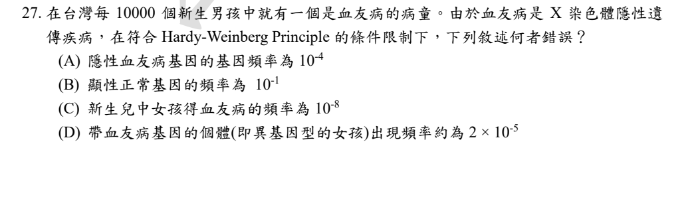
原卷PDF5 · 官方原答案PDF4 · 釋疑PDF9、釋疑PDF10
官方採計：B或D 原答案：B
原B，官方更正為B或D
主分類：Ch23 The Evolution of Populations
23.2 / The Hardy-Weinberg Equation
目錄行1445；條目起始印刷頁490；實際目錄 PDF41
次分類：Ch15 The Chromosomal Basis of Inheritance
15.2 / Inheritance of X-Linked Genes
目錄行945；條目起始印刷頁299；實際目錄 PDF39
主分類理由：已知患病男孩比例推等位基因及女生基因型頻率，計算核心為23.2 The Hardy-Weinberg Equation。
次分類理由：15.2 Inheritance of X-Linked Genes解釋男性半合子患病率為q而非q²。
科學說明：原B，官方更正B或D。q=10^-4，p=0.9999；女性患病率q²=10^-8，女性帶因率2pq=0.00019998≈2×10^-4，故B、D錯。C依「女孩群體內」分母解讀；若以全部新生兒為分母還需性別比例，原題措辭界線保留。
來源涵蓋範圍：Campbell正文支援分類原理；原題與官方釋疑的假設、資料及措辭限制另見科學說明。
教材正文：印刷490／PDF539、印刷491／PDF540、印刷492／PDF541、印刷299／PDF348、印刷300／PDF349
補充來源：不需另加課本外具名機制來源
另行比較：男孩q、女孩q²/2pq與全部新生兒分母是否混淆？
490–492及299–300頁核算q=10^-4、q²=10^-8、2pq=1.9998×10^-4；B及D均錯，符合113更正。主H-W方程、次X連鎖；C分母假設仍保存。
結論：證據確認，分類疑義已解決。完整覆核紀錄
Q28 · 18.1 / Positive Gene Regulation 正式分類
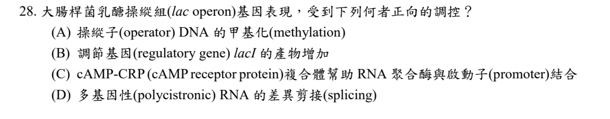
原卷PDF6 · 官方原答案PDF4 · 已核對生物釋疑PDF8–12
官方採計：C 原答案：C
未列於已取得113生物釋疑PDF8–12；依同年度原答案PDF4採計
主分類：Ch18 Regulation of Gene Expression
18.1 / Positive Gene Regulation
目錄行1113；條目起始印刷頁369；實際目錄 PDF39
主分類理由：cAMP-CRP促進轉錄是18.1 Positive Gene Regulation的直接例子。
次分類理由：無必要次條目；不把甲基化或差異剪接等干擾選項各加一章。
科學說明：採C。CRP即CAP，結合cAMP後有助RNA聚合酶在lac啟動子有效起始轉錄；lacI增加是抑制方向，細菌operon不是靠真核型可變剪接調控。
來源涵蓋範圍：Campbell正文支援分類原理；原題與官方釋疑的假設、資料及措辭限制另見科學說明。
教材正文：印刷369／PDF418、印刷370／PDF419
補充來源：不需另加課本外具名機制來源
另行比較：cAMP-CRP為負向抑制還是正向調控？
369–370頁CAP/cAMP促RNA聚合酶起始，確認C；主Positive Gene Regulation，不把lacI與甲基化干擾選項擴成無必要主次章。
結論：證據確認，分類疑義已解決。完整覆核紀錄
Q29 · 11.3 / Small Molecules and Ions as Second Messengers 正式分類
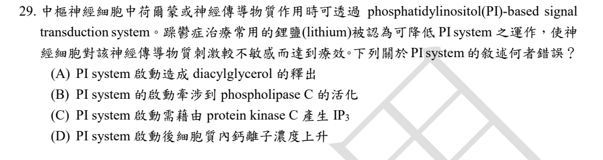
原卷PDF6 · 官方原答案PDF4 · 已核對生物釋疑PDF8–12
官方採計：C 原答案：C
未列於已取得113生物釋疑PDF8–12；依同年度原答案PDF4採計
主分類：Ch11 Cell Communication
11.3 / Small Molecules and Ions as Second Messengers
本地toc.txt漏寫Ions並使用and；原檔保留，正式顯示依PDF真實最小條目，兩份名稱均保存。 目錄行724；條目起始印刷頁223；實際目錄 PDF38
主分類理由：IP3、DAG與Ca2+訊號屬11.3 Small Molecules and Ions as Second Messengers。
次分類理由：無必要次章；躁鬱症及鋰鹽是情境，題目要判斷PLC與PKC的先後。
科學說明：採C。PLC切割膜PIP2生成IP3與DAG；IP3使ER釋鈣，DAG與Ca2+可促進PKC活性。不是PKC生成IP3。題幹對鋰鹽療效的歷史假說不作本輪已證實藥理結論。
來源涵蓋範圍：Campbell正文支援分類原理；原題與官方釋疑的假設、資料及措辭限制另見科學說明。
教材正文：印刷223／PDF272、印刷224／PDF273、印刷225／PDF274
補充來源：不需另加課本外具名機制來源
另行比較：PLC生成IP3/DAG，或PKC生成IP3？
223–225頁逐步訊號鏈直接確認C錯在酵素角色；主第二傳訊物，疾病及鋰鹽療效不作分類主題或新的藥理結論。文字TOC的名稱缺Ions且連接詞不同，正式標題依實看PDF38，原文字名稱仍另存。
結論：證據確認，分類疑義已解決。完整覆核紀錄
Q30 · 16.2 / Replicating the Ends of DNA Molecules 正式分類
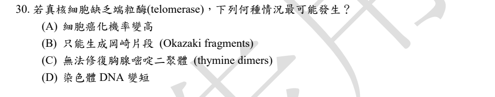
原卷PDF6 · 官方原答案PDF4 · 已核對生物釋疑PDF8–12
官方採計：D 原答案：D
未列於已取得113生物釋疑PDF8–12；依同年度原答案PDF4採計
主分類：Ch16 The Molecular Basis of Inheritance
16.2 / Replicating the Ends of DNA Molecules
目錄行1019；條目起始印刷頁328；實際目錄 PDF39
主分類理由：端粒酶與末端複製問題直接對應16.2 Replicating the Ends of DNA Molecules。
次分類理由：無必要次條目；岡崎片段與修復是干擾選項，不能取代末端維持核心。
科學說明：採D。缺乏端粒維持時，反覆複製可使線性染色體端粒縮短；題目不支持必然癌化，也不是只能合成岡崎片段或必然不能修復嘧啶二聚體。
來源涵蓋範圍：Campbell正文支援分類原理；原題與官方釋疑的假設、資料及措辭限制另見科學說明。
教材正文：印刷328／PDF377、印刷329／PDF378
補充來源：不需另加課本外具名機制來源
另行比較：端粒酶缺失是末端縮短、必然癌化或一般DNA修復失能？
328–329頁末端複製問題支援D；主Replicating the Ends，未外推端粒酶缺失必然癌化。
結論：證據確認，分類疑義已解決。完整覆核紀錄
Q31 · 17.4 / Building a Polypeptide 正式分類
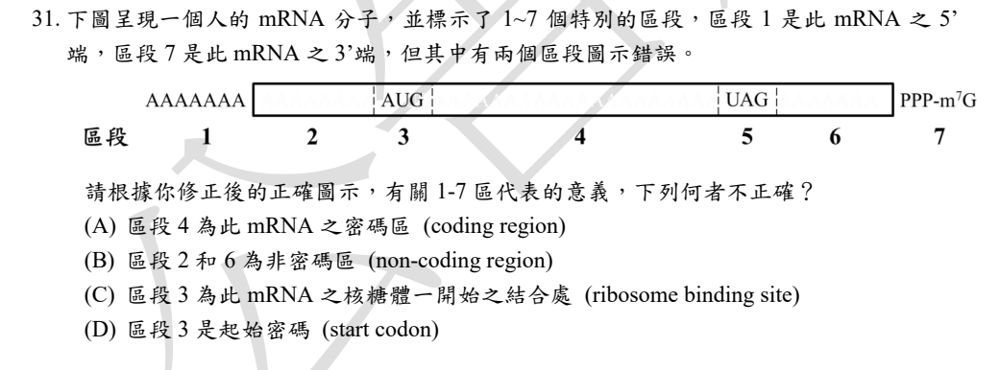
官方採計：C 原答案：C
維持原答案C
主分類：Ch17 Gene Expression: From Gene to Protein
17.4 / Building a Polypeptide
目錄行1072；條目起始印刷頁350；實際目錄 PDF39
次分類：Ch17 Gene Expression: From Gene to Protein
17.3 / Alteration of mRNA Ends
目錄行1059；條目起始印刷頁345；實際目錄 PDF39
主分類理由：修正mRNA後判斷核糖體起始結合位置，主歸17.4 Building a Polypeptide。
次分類理由：17.3 Alteration of mRNA Ends直接對應5′cap與poly-A尾畫反及UTR辨識。
科學說明：官方維持C。原圖1是5′端卻畫AAAAAAA，7是3′端卻畫PPP-m7G；應交換兩端標記，原圖不改。典型真核起始複合體先招募到5′cap附近再掃描到區3 AUG，區3不是最初結合處；區4為編碼區的一部分，AUG本身也屬編碼序列，不能說全部編碼區僅限4。
來源涵蓋範圍：Campbell正文支援分類原理；原題與官方釋疑的假設、資料及措辭限制另見科學說明。
教材正文：印刷350／PDF399、印刷351／PDF400、印刷352／PDF401、印刷345／PDF394
補充來源：不需另加課本外具名機制來源
另行比較：原圖兩端、cap初始招募與AUG起始密碼子的區別？
原圖完整保留，350–352及345頁核對5′cap/3′poly-A、UTR、掃描與起始；C是最初結合位置錯誤，原圖標號4只是一段編碼區，不能排除AUG亦屬編碼序列。
結論：證據確認，分類疑義已解決。完整覆核紀錄
Q32 · 47.3 / Fate Mapping 正式分類
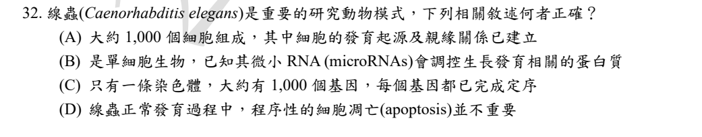
原卷PDF6 · 官方原答案PDF4 · 已核對生物釋疑PDF8–12
官方採計：A 原答案：A
未列於已取得113生物釋疑PDF8–12；依同年度原答案PDF4採計
主分類：Ch47 Animal Development
47.3 / Fate Mapping
目錄行3160；條目起始印刷頁1058；實際目錄 PDF48
次分類：Ch11 Cell Communication
11.5 / Apoptosis in the Soil Worm *Caenorhabditis elegans*
目錄行741；條目起始印刷頁230；實際目錄 PDF38
主分類理由：約千個細胞且完整譜系已建立，直接對應47.3 Fate Mapping。
次分類理由：11.5線蟲凋亡條目核對D並說明發育命運不只增殖。
科學說明：採A。C. elegans為多細胞模式動物，透明且細胞譜系可追蹤；成年雌雄同體約959個體細胞（不含生殖細胞），細胞數依性別及階段而異。程序性死亡對正常發育重要，非單細胞或僅一千基因。
來源涵蓋範圍：Campbell正文支援分類原理；原題與官方釋疑的假設、資料及措辭限制另見科學說明。
教材正文：印刷1058／PDF1107、印刷1059／PDF1108、印刷230／PDF279
補充來源：不需另加課本外具名機制來源
另行比較：線蟲一千細胞是單細胞、固定所有性別數目或命運圖譜？
1058–1059頁具名C. elegans約959體細胞及譜系，230頁補凋亡；答案A，主Fate Mapping而非細胞數當全部生命期定數。
結論：證據確認，分類疑義已解決。完整覆核紀錄
Q33 · 15.2 / X Inactivation in Female Mammals 正式分類
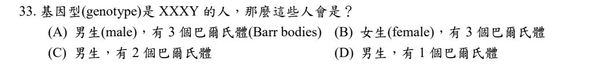
原卷PDF6 · 官方原答案PDF4 · 已核對生物釋疑PDF8–12
官方採計：C 原答案：C
未列於已取得113生物釋疑PDF8–12；依同年度原答案PDF4採計
主分類：Ch15 The Chromosomal Basis of Inheritance
15.2 / X Inactivation in Female Mammals
目錄行948；條目起始印刷頁300；實際目錄 PDF39
次分類：Ch15 The Chromosomal Basis of Inheritance
15.2 / The Chromosomal Basis of Sex
目錄行942；條目起始印刷頁298；實際目錄 PDF39
次分類：Ch15 The Chromosomal Basis of Inheritance
15.4 / Human Conditions Due to Chromosomal Alterations
目錄行974；條目起始印刷頁308；實際目錄 PDF39
主分類理由：三條X中通常兩條失活形成Barr bodies，主歸15.2 X Inactivation in Female Mammals。
次分類理由：同章性別染色體基礎及染色體異常條目提供Y與性染色體非整倍數背景。
科學說明：採C。依題目的典型染色體性別發育假設，XXXY有Y為男性，Barr body數為X數−1=2；章節標題雖寫Female Mammals，原理同樣用於多X的男性，不因此改掛錯章。
來源涵蓋範圍：Campbell正文支援分類原理；原題與官方釋疑的假設、資料及措辭限制另見科學說明。
教材正文：印刷300／PDF349、印刷301／PDF350、印刷298／PDF347、印刷308／PDF357、印刷309／PDF358
補充來源：不需另加課本外具名機制來源
另行比較：條目標題Female Mammals是否排除XXXY男性的X失活？
298、300–301、308–309頁支持一般X數減1及Y性別背景；題定條件下男性兩個Barr bodies，答案C。主X失活標題照本地原文，不虛構男性專屬條目。
結論：證據確認，分類疑義已解決。完整覆核紀錄
Q34 · 41.5 / Regulation of Energy Storage 正式分類
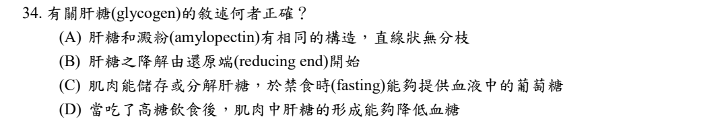
官方採計：D 原答案：D
維持原答案D
主分類：Ch41 Animal Nutrition
41.5 / Regulation of Energy Storage
目錄行2743；條目起始印刷頁915；實際目錄 PDF46
次分類：Ch05 The Structure and Function of Large Biological Molecules
5.2 / Polysaccharides
目錄行242；條目起始印刷頁70；實際目錄 PDF36
主分類理由：餐後肌肉肝醣合成與血糖下降直接對應41.5 Regulation of Energy Storage。
次分類理由：5.2 Polysaccharides核對肝醣、amylopectin分枝；45章回饋是較廣框架，正文最直接在41章，故不以45章作主。
科學說明：官方維持D。肝醣和amylopectin皆分枝，肝醣通常更密；分解由非還原端。肌肉肝醣供自身使用，缺乏葡萄糖-6-磷酸酶不能直接釋游離葡萄糖支援血糖；餐後攝糖合成肌肉肝醣可降低血糖。「肝糖」不表示只能位於肝臟。非還原端與肌肉缺乏G6Pase另以具名教材補足。
來源涵蓋範圍：Campbell支援所列分類框架；具名機制或科學界線由列示原始研究/官方來源補足。
教材正文：印刷915／PDF964、印刷916／PDF965、印刷70／PDF119、印刷71／PDF120
補充來源：S16
另行比較：以45章激素概述或41.5能量儲存為主？
915–916頁直接畫血糖與肝/肌肝醣，故修正預選45章為41.5 Regulation of Energy Storage；70–71頁支援分枝聚醣，具名教材補非還原端與G6Pase。官方D，沒有只改形式狀態。
結論：證據確認，分類疑義已解決。完整覆核紀錄
Q35 · 5.2 / Polysaccharides 正式分類
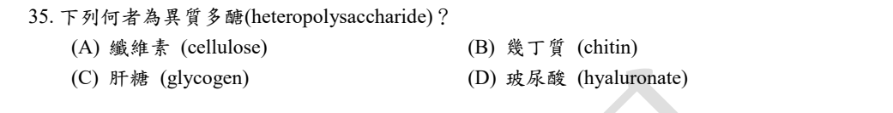
原卷PDF7 · 官方原答案PDF4 · 已核對生物釋疑PDF8–12
官方採計：D 原答案：D
未列於已取得113生物釋疑PDF8–12；依同年度原答案PDF4採計
主分類：Ch05 The Structure and Function of Large Biological Molecules
5.2 / Polysaccharides
目錄行242；條目起始印刷頁70；實際目錄 PDF36
主分類理由：辨識由一種或多種單糖組成的聚醣，直接歸5.2 Polysaccharides。
次分類理由：無必要次條目；細胞外基質只是玻尿酸用途，並非題目測驗要求。
科學說明：採D。纖維素及肝醣為葡萄糖聚合物，幾丁質為N-acetylglucosamine聚合物；玻尿酸為GlcA與GlcNAc的重複雙糖，屬異質多醣。Campbell提供聚醣框架與前三者，玻尿酸組成由Essentials of Glycobiology補足。
來源涵蓋範圍：Campbell支援所列分類框架；具名機制或科學界線由列示原始研究/官方來源補足。
教材正文：印刷70／PDF119、印刷71／PDF120、印刷72／PDF121
補充來源：S06
另行比較：玻尿酸用途的細胞外基質或單糖組成為核心？
70–72頁核實肝醣、纖維素與幾丁質單體，Glycobiology核實玻尿酸雙糖；主聚醣已足夠，刪除預選但不必要的ECM次條目，答案D。
結論：證據確認，分類疑義已解決。完整覆核紀錄
Q36 · 19.2 / Replicative Cycles of Phages 正式分類
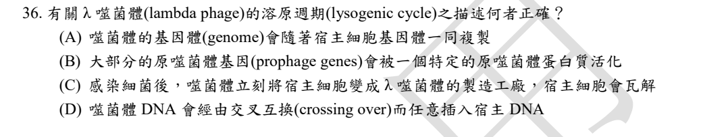
原卷PDF7 · 官方原答案PDF4 · 已核對生物釋疑PDF8–12
官方採計：A 原答案：A
未列於已取得113生物釋疑PDF8–12；依同年度原答案PDF4採計
主分類：Ch19 Viruses
19.2 / Replicative Cycles of Phages
目錄行1199；條目起始印刷頁402；實際目錄 PDF40
主分類理由：λ溶原週期與原噬菌體狀態直接歸19.2 Replicative Cycles of Phages。
次分類理由：無必要次條目；抑制蛋白與整合在同一條目已直接涵蓋。
科學說明：採A。原噬菌體隨宿主DNA複製；大部分裂解基因受抑制而非活化，立即大量產生病毒並裂解為裂解週期。λ整合具特定位置機制，不是題稱任意交叉互換。
來源涵蓋範圍：Campbell正文支援分類原理；原題與官方釋疑的假設、資料及措辭限制另見科學說明。
教材正文：印刷402／PDF451、印刷403／PDF452、印刷404／PDF453
補充來源：不需另加課本外具名機制來源
另行比較：裂解與溶原週期是否混同？
402–404頁λ原噬菌體、抑制蛋白及宿主同步複製核對A；主噬菌體複製最小條目，沒有用整章代替。
結論：證據確認，分類疑義已解決。完整覆核紀錄
Q37 · 43.1 / Innate Immunity of Vertebrates 正式分類
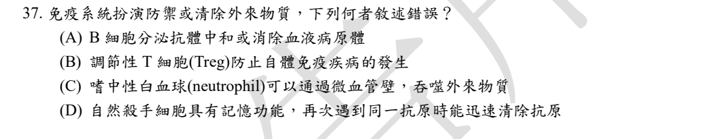
官方採計：D 原答案：D
維持原答案D
主分類：Ch43 The Immune System
43.1 / Innate Immunity of Vertebrates
目錄行2870；條目起始印刷頁954；實際目錄 PDF47
次分類：Ch43 The Immune System
43.2 / B Cell and T Cell Development
目錄行2889；條目起始印刷頁960；實際目錄 PDF47
次分類：Ch43 The Immune System
43.4 / Exaggerated, Self-Directed, and Diminished Immune Responses
目錄行2924；條目起始印刷頁970；實際目錄 PDF47
主分類理由：NK、嗜中性細胞等先天免疫作用與記憶的界線，主歸43.1 Innate Immunity of Vertebrates。
次分類理由：43.2 B Cell and T Cell Development核對典型免疫記憶，43.4同章失衡條目支援Treg。
科學說明：官方維持D，但不能把釋疑「NK不具有特異性記憶」當無例外定律。Sun等2009小鼠CMV研究已顯示特定Ly49H+ NK細胞長期存留及再次挑戰的保護反應。分類為先天/適應免疫界線可確定；原題與官方過度概括保留衝突。B細胞分泌抗體更精確指其漿細胞效應型。
來源涵蓋範圍：Campbell支援所列分類框架；具名機制或科學界線由列示原始研究/官方來源補足。
教材正文：印刷954／PDF1003、印刷955／PDF1004、印刷956／PDF1005、印刷961／PDF1010、印刷962／PDF1011、印刷971／PDF1020
補充來源：S07
另行比較：傳統先天/適應二分能否推出NK從無特異性記憶？
954–956、961–962、971頁確認課本分類框架；Sun2009小鼠CMV Ly49H+實驗是具體反例，官方D仍採計。主先天免疫、次適應記憶與失衡，來源衝突明示而分類疑義已解。
結論：證據確認，分類疑義已解決。完整覆核紀錄
Q38 · 43.1 / Evasion of Innate Immunity by Pathogens 正式分類
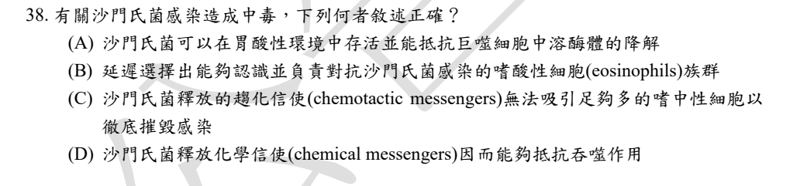
原卷PDF7 · 官方原答案PDF4 · 已核對生物釋疑PDF8–12
官方採計：A 原答案：A
未列於已取得113生物釋疑PDF8–12；依同年度原答案PDF4採計
主分類：Ch43 The Immune System
43.1 / Evasion of Innate Immunity by Pathogens
目錄行2873；條目起始印刷頁957；實際目錄 PDF47
主分類理由：耐胃酸與抵抗巨噬細胞清除的核心是病原逃避先天免疫，主歸43.1 Evasion of Innate Immunity by Pathogens。
次分類理由：無必要次章；教材給逃避免疫框架，沙門氏菌具名實驗另存，不把病原細菌整章取代具體機制。
科學說明：採A。沙門氏菌可誘導耐酸反應並在巨噬細胞內存活；原始實驗提供耐酸及干擾胞內運輸證據。抵抗清除不等於完全不被吞噬，且SCV與溶酶體互動依菌株及條件，不能一概說完全無融合。嗜酸性細胞不是選擇性增殖的抗沙門氏菌克隆。
來源涵蓋範圍：Campbell支援所列分類框架；具名機制或科學界線由列示原始研究/官方來源補足。
教材正文：印刷957／PDF1006、印刷958／PDF1007
補充來源：S08
另行比較：病原逃避吞噬是否等於完全不被吞噬或完全不與溶酶體互動？
957–958頁主要舉結核等逃避免疫例，沙門氏菌具名來源改由Lee及Buchmeier原始摘要；限定菌株、細胞條件，答案A，主逃避先天免疫不變。
結論：證據確認，分類疑義已解決。完整覆核紀錄
Q39 · 20.2 / Analyzing Gene Expression 正式分類
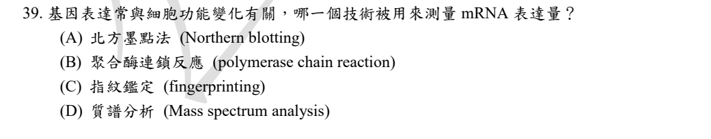
官方採計：A 原答案：A
維持原答案A
主分類：Ch20 DNA Tools and Biotechnology
20.2 / Analyzing Gene Expression
目錄行1251；條目起始印刷頁423；實際目錄 PDF40
次分類：Ch20 DNA Tools and Biotechnology
20.1 / Amplifying DNA: The Polymerase Chain Reaction (PCR) and Its Use in DNA Cloning
目錄行1241；條目起始印刷頁420；實際目錄 PDF40
主分類理由：題目測mRNA量，主歸20.2 Analyzing Gene Expression。
次分類理由：20.1 PCR條目用於區分DNA擴增與RNA反轉錄測量；Northern具名方法另以原始研究核對。
科學說明：官方維持A。Northern用分離、轉膜與探針雜交檢測特定RNA，可比較相對量；一般PCR模板是DNA，若要量測RNA需反轉錄及適當定量設計，不能直接把選項PCR補寫成RT-qPCR。Campbell此版重點為in situ、RT-PCR與RNA-seq，沒有冒稱Northern詳述位於正文。
來源涵蓋範圍：Campbell支援所列分類框架；具名機制或科學界線由列示原始研究/官方來源補足。
教材正文：印刷423／PDF472、印刷424／PDF473、印刷425／PDF474、印刷420／PDF469
補充來源：S09
另行比較：一般PCR能否直接當RT-qPCR測mRNA？
423–425及420頁RNA基因表現量測與DNA模板PCR分開；Alwine1977原始研究補Northern方法，官方A。主Analyzing Gene Expression，次PCR，不替原選項增加RT條件。
結論：證據確認，分類疑義已解決。完整覆核紀錄
Q40 · 5.3 / Steroids 正式分類
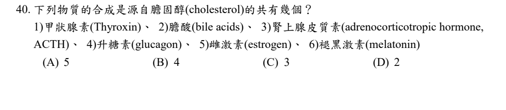
官方採計：C或D 原答案：C
原C，官方更正為C或D
主分類：Ch05 The Structure and Function of Large Biological Molecules
5.3 / Steroids
目錄行255；條目起始印刷頁75；實際目錄 PDF36
次分類：Ch45 Hormones and the Endocrine System
45.1 / Chemical Classes of Hormones
目錄行3001；條目起始印刷頁1001；實際目錄 PDF47
次分類：Ch45 Hormones and the Endocrine System
45.3 / Adrenal Hormones: Response to Stress
目錄行3039；條目起始印刷頁1012；實際目錄 PDF47
次分類：Ch41 Animal Nutrition
41.3 / Digestion in the Small Intestine
目錄行2714；條目起始印刷頁908；實際目錄 PDF46
主分類理由：由膽固醇形成不同產物的結構來源判斷，主歸5.3 Steroids。
次分類理由：45.1激素化學類別、45.3腎上腺激素及41.3小腸消化分別核對ACTH/皮質激素及膽鹽。
科學說明：原答案表C，更正C或D。中文「腎上腺皮質素」可解為皮質類固醇，英文ACTH是促腎上腺皮質激素、屬胜肽。依中文計膽酸、皮質類固醇、雌激素共3；依英文僅膽酸、雌激素共2。原題中英文差異完整保存，不擅自統一。膽酸由膽固醇合成另以LiverTox直接核對。
來源涵蓋範圍：Campbell支援所列分類框架；具名機制或科學界線由列示原始研究/官方來源補足。
教材正文：印刷75／PDF124、印刷1001／PDF1050、印刷1002／PDF1051、印刷1012／PDF1061、印刷1013／PDF1062、印刷908／PDF957、印刷909／PDF958
補充來源：S17
另行比較：中文皮質素與英文ACTH會導致同一產物數嗎？
75、1001–1002、1012–1013、908–909頁核對類固醇/胜肽及膽鹽功能；LiverTox補膽固醇生成膽酸。中文3、英文2，依113釋疑C或D，主Steroids並保留名稱差異。
結論：證據確認，分類疑義已解決。完整覆核紀錄
Q41 · 11.5 / Apoptotic Pathways and the Signals That Trigger Them 正式分類
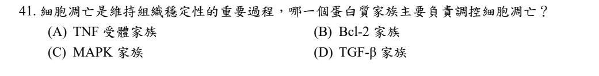
原卷PDF8 · 官方原答案PDF4 · 已核對生物釋疑PDF8–12
官方採計：B 原答案：B
未列於已取得113生物釋疑PDF8–12；依同年度原答案PDF4採計
主分類：Ch11 Cell Communication
11.5 / Apoptotic Pathways and the Signals That Trigger Them
目錄行744；條目起始印刷頁230；實際目錄 PDF38
次分類：Ch11 Cell Communication
11.5 / Apoptosis in the Soil Worm *Caenorhabditis elegans*
目錄行741；條目起始印刷頁230；實際目錄 PDF38
主分類理由：Bcl-2家族調節生死訊號，主歸11.5 Apoptotic Pathways and the Signals That Trigger Them。
次分類理由：同章C. elegans凋亡條目提供Ced-9模型；其與Bcl-2同源關係以原始研究補足。
科學說明：採B。Bcl-2家族含抑制或促進凋亡成員，調節粒線體相關生死決策；TNF受體等也能參與凋亡訊號，不能說其完全無關。題問主要調控家族，非執行蛋白酶caspase。
來源涵蓋範圍：Campbell支援所列分類框架；具名機制或科學界線由列示原始研究/官方來源補足。
教材正文：印刷229／PDF278、印刷230／PDF279、印刷231／PDF280
補充來源：S10
另行比較：Bcl-2主要家族、TNF受體訊號與caspase執行層級？
229–231頁生死路徑與Ced-9模型，加Hengartner1994同源研究確認B；主Apoptotic Pathways、同章次線蟲，未說TNF受體完全不參與凋亡。
結論：證據確認，分類疑義已解決。完整覆核紀錄
Q42 · 21.2 / Understanding Genes and Gene Expression at the Systems Level 正式分類
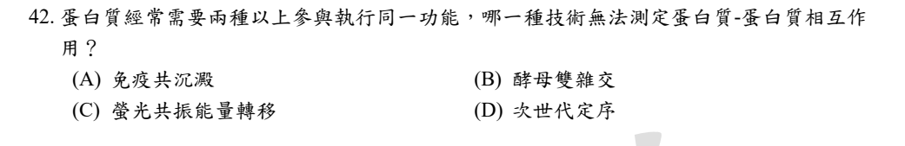
原卷PDF8 · 官方原答案PDF4 · 已核對生物釋疑PDF8–12
官方採計：D 原答案：D
未列於已取得113生物釋疑PDF8–12；依同年度原答案PDF4採計
主分類：Ch21 Genomes and Their Evolution
21.2 / Understanding Genes and Gene Expression at the Systems Level
目錄行1307；條目起始印刷頁446；實際目錄 PDF40
次分類：Ch20 DNA Tools and Biotechnology
20.1 / DNA Sequencing
目錄行1232；條目起始印刷頁416；實際目錄 PDF40
主分類理由：測蛋白互作的研究目的直接對應21.2 Understanding Genes and Gene Expression at the Systems Level。
次分類理由：20.1 DNA Sequencing釐清NGS一般讀取核酸序列，不能只因錯誤選項就把定序當主分類。
科學說明：採D。co-IP、酵母雙雜交與FRET可提供蛋白複合體或近距離互作證據；NGS本身讀核酸序列，並非直接蛋白互作量測。互作方法各有間接性與對照需求，與定序結合的專門流程也存在，故「無法」限定為題列方法的一般直接用途。
來源涵蓋範圍：Campbell支援所列分類框架；具名機制或科學界線由列示原始研究/官方來源補足。
教材正文：印刷446／PDF495、印刷447／PDF496、印刷416／PDF465、印刷417／PDF466
補充來源：S11
另行比較：應依錯誤選項NGS歸定序，還是按蛋白互作研究目的？
446–447頁是系統層級基因/蛋白網路，圖例是遺傳互作而非直接結合試驗；416–417頁為定序。Fields1989及FRET原始研究補直接方法，主21.2系統研究、次DNA Sequencing，限定一般直接用途。
結論：證據確認，分類疑義已解決。完整覆核紀錄
Q43 · 43.4 / Exaggerated, Self-Directed, and Diminished Immune Responses 正式分類
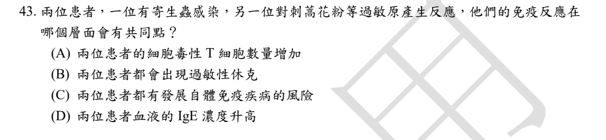
原卷PDF8 · 官方原答案PDF4 · 已核對生物釋疑PDF8–12
官方採計：D 原答案：D
未列於已取得113生物釋疑PDF8–12；依同年度原答案PDF4採計
主分類：Ch43 The Immune System
43.4 / Exaggerated, Self-Directed, and Diminished Immune Responses
目錄行2924；條目起始印刷頁970；實際目錄 PDF47
次分類：Ch43 The Immune System
43.3 / B Cells and Antibodies: A Response to Extracellular Pathogens
目錄行2899；條目起始印刷頁964；實際目錄 PDF47
主分類理由：花粉過敏的IgE反應與寄生蟲防禦比較，主歸43.4 Exaggerated, Self-Directed, and Diminished Immune Responses。
次分類理由：43.3 B Cells and Antibodies提供抗體類別，並補讀同章先天防禦中抗寄生蠕蟲作用。
科學說明：採D。IgE可參與即時型過敏及抗寄生蠕蟲反應，是選項中最合適共同點；「寄生蟲」範圍很廣，不能斷言所有種類/階段感染者必有IgE升高，也不是兩人必然過敏性休克或自體免疫。
來源涵蓋範圍：Campbell支援所列分類框架；具名機制或科學界線由列示原始研究/官方來源補足。
教材正文：印刷970／PDF1019、印刷965／PDF1014、印刷966／PDF1015、印刷955／PDF1004
補充來源：S18
另行比較：IgE共同升高是否代表所有寄生蟲均如此？
970、965–966、955頁核對過敏與抗寄生蠕蟲框架，另以OpenStax具名核對IgE的兩種作用，答案D；保留物種/階段條件，不推必然過敏性休克，主免疫失衡、次抗體。
結論：證據確認，分類疑義已解決。完整覆核紀錄
Q44 · 20.3 / Stem Cells of Animals 正式分類
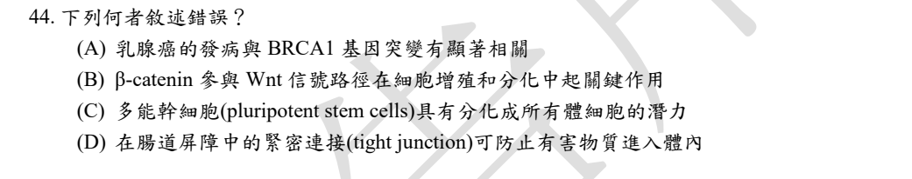
官方採計：送分 原答案：C
原C，官方更正為送分
主分類：Ch20 DNA Tools and Biotechnology
20.3 / Stem Cells of Animals
目錄行1267；條目起始印刷頁430；實際目錄 PDF40
次分類：Ch18 Regulation of Gene Expression
18.5 / Inherited Predisposition and Environmental Factors Contributing to Cancer
目錄行1172；條目起始印刷頁394；實際目錄 PDF40
次分類：Ch06 A Tour of the Cell
6.7 / Cell Junctions
目錄行394；條目起始印刷頁119；實際目錄 PDF36
次分類：Ch11 Cell Communication
11.3 / Signal Transduction Pathways
目錄行718；條目起始印刷頁221；實際目錄 PDF38
主分類理由：官方爭議源自多能幹細胞的分化能力，主歸20.3 Stem Cells of Animals，送分也保留分類。
次分類理由：18.5 BRCA風險、6.7緊密連接及11.3訊息傳遞提供其他選項框架；本地正文未查得Wnt/β-catenin具名機制，直接依原始研究補足。
科學說明：原C，官方釋疑認定C亦正確、全題送分。多能細胞可生成身體各類細胞但不等於能獨自形成含全部胚外組織的個體；BRCA1風險、Wnt/β-catenin及緊密連接的屏障角色各有支持。D是正常屏障功能而非任何有害物質絕不可能穿越的保證。
來源涵蓋範圍：Campbell支援所列分類框架；具名機制或科學界線由列示原始研究/官方來源補足。
教材正文：印刷430／PDF479、印刷431／PDF480、印刷394／PDF443、印刷119／PDF168、印刷120／PDF169、印刷221／PDF270、印刷222／PDF271
補充來源：S12
另行比較：全題送分是否可刪題？Wnt/β-catenin是否真在本地軸形成條目？
保留Q44完整原圖、原C及送分採計；430–431頁多能幹細胞直接解決官方爭議，394及119–120頁核對BRCA/緊密連接。未在軸形成正文查得β-catenin，改用11.3訊號框架221–222頁並引2021原始研究，不冒充課本具名內容。
結論：證據確認，分類疑義已解決。完整覆核紀錄
Q45 · 19.2 / Replicative Cycles of Animal Viruses 正式分類
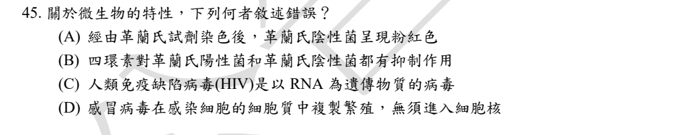
官方採計：D 原答案：D
維持原答案D
主分類：Ch19 Viruses
19.2 / Replicative Cycles of Animal Viruses
目錄行1202；條目起始印刷頁404；實際目錄 PDF40
次分類：Ch27 Bacteria and Archaea
27.1 / Cell-Surface Structures
目錄行1709；條目起始印刷頁574；實際目錄 PDF42
主分類理由：爭議在動物病毒複製所在細胞區室，主歸19.2 Replicative Cycles of Animal Viruses。
次分類理由：27.1 Cell-Surface Structures核對革蘭氏陰性染色，保留細菌與病毒比較的次章。
科學說明：官方維持D，釋疑以流感病毒需核內步驟解釋；原題只寫「感冒病毒」，不等同特指流感。CDC區分兩者，鼻病毒等複製主要在細胞質，故不能泛稱所有感冒病毒都必入核。HIV為RNA逆轉錄病毒，革蘭氏陰性菌呈粉紅；四環素廣效亦不代表所有菌株皆敏感。
來源涵蓋範圍：Campbell支援所列分類框架；具名機制或科學界線由列示原始研究/官方來源補足。
教材正文：印刷404／PDF453、印刷405／PDF454、印刷406／PDF455、印刷574／PDF623、印刷575／PDF624
補充來源：S13
另行比較：感冒病毒是否必然等於流感病毒？
404–406頁動物病毒RNA/逆轉錄與核內步驟框架，574–575頁Gram陰性染色；CDC區分感冒流感、HRV原始研究支持細胞質複製。官方D保留，原題用詞與釋疑特指流感不強行統一。
結論：證據確認，分類疑義已解決。完整覆核紀錄
Q46 · 39.2 / A Survey of Plant Hormones 正式分類
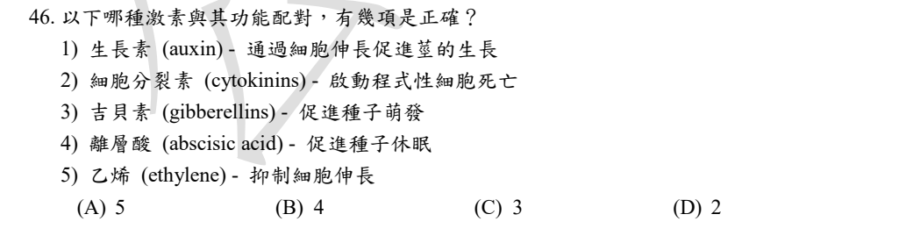
官方採計：B 原答案：B
維持原答案B
主分類：Ch39 Plant Responses to Internal and External Signals
39.2 / A Survey of Plant Hormones
目錄行2557；條目起始印刷頁847；實際目錄 PDF45
主分類理由：同時配對五種植物激素，真實最小目錄為39.2 A Survey of Plant Hormones。
次分類理由：本地目錄未把auxin等正文小標獨立列成條目，因此不虛構五個目錄ID。
科學說明：官方維持B，共4項：1、3、4、5。細胞分裂素通常促分裂及延緩衰老，非以啟動死亡作其配對；乙烯抑制伸長依幼苗三重反應等條件，不外推所有組織與環境都相同。
來源涵蓋範圍：Campbell正文支援分類原理；原題與官方釋疑的假設、資料及措辭限制另見科學說明。
教材正文：印刷847／PDF896、印刷848／PDF897、印刷849／PDF898、印刷850／PDF899、印刷851／PDF900、印刷852／PDF901、印刷853／PDF902、印刷854／PDF903
補充來源：不需另加課本外具名機制來源
另行比較：五種激素是否可各造一個最小目錄？
847–854頁逐一核對auxin、cytokinin、gibberellin、ABA、ethylene，1/3/4/5共4項、官方B；TOC最小只列A Survey of Plant Hormones，條目不虛構，乙烯效果限具體反應情境。
結論：證據確認，分類疑義已解決。完整覆核紀錄
Q47 · 21.2 / Centralized Resources for Analyzing Genome Sequences 正式分類
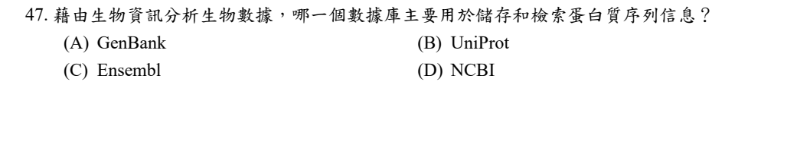
官方採計：B 原答案：B
維持原答案B
主分類：Ch21 Genomes and Their Evolution
21.2 / Centralized Resources for Analyzing Genome Sequences
目錄行1301；條目起始印刷頁444；實際目錄 PDF40
主分類理由：資料庫的序列儲存與檢索目的直接對應21.2 Centralized Resources for Analyzing Genome Sequences。
次分類理由：無必要次條目；UniProt蛋白序列與功能的具名定位以其官方資料補足，本地Campbell提供生物資訊資料庫框架。
科學說明：官方維持B。UniProt主要整合蛋白質序列和功能資訊；GenBank主要核酸序列，Ensembl重點基因組註解，NCBI是涵蓋多種資料庫的機構與平台。
來源涵蓋範圍：Campbell支援所列分類框架；具名機制或科學界線由列示原始研究/官方來源補足。
教材正文：印刷444／PDF493、印刷445／PDF494
補充來源：S14
另行比較：UniProt是一般基因核酸資料庫還是蛋白序列功能資源？
444–445頁NCBI集中序列資源與生物資訊支援分類；UniProt官方文件/開發者論文補具名功能定位，答案B。其他資料庫可含蛋白相關資訊但不等同主要任務皆蛋白。
結論：證據確認，分類疑義已解決。完整覆核紀錄
Q48 · 9.6 / The Versatility of Catabolism 正式分類
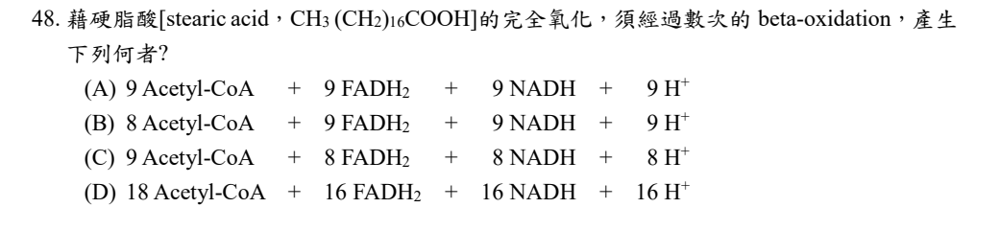
原卷PDF9 · 官方原答案PDF4 · 已核對生物釋疑PDF8–12
官方採計：C 原答案：C
未列於已取得113生物釋疑PDF8–12；依同年度原答案PDF4採計
主分類：Ch09 Cellular Respiration and Fermentation
9.6 / The Versatility of Catabolism
目錄行608；條目起始印刷頁182；實際目錄 PDF37
主分類理由：脂肪酸β氧化生成乙醯CoA、NADH、FADH2直接歸9.6 The Versatility of Catabolism。
次分類理由：無必要次條目；不把乙醯CoA後續TCA完全氧化混入本題β氧化產物數。
科學說明：採C。硬脂酸18碳，8輪β氧化產9 acetyl-CoA、8 NADH、8 FADH2（選項另列8H+）。「完全氧化」若指最終總反應會至CO2及H2O；題目列項實際是β氧化階段，不是全部呼吸終產物。
來源涵蓋範圍：Campbell正文支援分類原理；原題與官方釋疑的假設、資料及措辭限制另見科學說明。
教材正文：印刷182／PDF231、印刷183／PDF232
補充來源：不需另加課本外具名機制來源
另行比較：18碳脂肪酸beta氧化與全程完全氧化是否混成同一產物清單？
182–183頁脂肪分解入乙醯CoA與還原當量，推算18/2=9乙醯CoA、9−1=8輪，每輪NADH及FADH2各1，故C。原題完全氧化措辭保留，答案列的是beta段產物，不是最終CO2/H2O。
結論：證據確認，分類疑義已解決。完整覆核紀錄
Q49 · 12.3 / The Cell Cycle Control System 正式分類
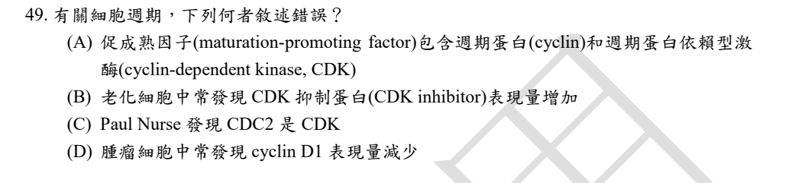
原卷PDF9 · 官方原答案PDF4 · 已核對生物釋疑PDF8–12
官方採計：D 原答案：D
未列於已取得113生物釋疑PDF8–12；依同年度原答案PDF4採計
主分類：Ch12 The Cell Cycle
12.3 / The Cell Cycle Control System
目錄行789；條目起始印刷頁244；實際目錄 PDF38
次分類：Ch12 The Cell Cycle
12.3 / Loss of Cell Cycle Controls in Cancer Cells
目錄行792；條目起始印刷頁248；實際目錄 PDF38
主分類理由：細胞週期cyclin-CDK及抑制因子的調節直接歸12.3 The Cell Cycle Control System。
次分類理由：同章Loss of Cell Cycle Controls in Cancer Cells對應腫瘤失控；CDK發現與p16、cyclin D1具名實驗補存。
科學說明：採D。MPF為cyclin-CDK複合體；衰老細胞常見特定CDK抑制因子上升。Nurse的cdc2研究屬CDK發現；部分腫瘤有cyclin D1過量/擴增，不能把普遍下降當典型特徵，也不主張所有腫瘤都上升。
來源涵蓋範圍：Campbell支援所列分類框架；具名機制或科學界線由列示原始研究/官方來源補足。
教材正文：印刷244／PDF293、印刷245／PDF294、印刷246／PDF295、印刷248／PDF297
補充來源：S15
另行比較：cyclin-CDK控制系統與腫瘤細胞cyclin D1是否通常減少？
244–246、248頁cyclin/Cdk及癌化，Nurse原始發現/講座、p16及cyclinD1研究補選項；D錯。修正預選不存在的目錄ID為實際L0789與L0792，分類以控制系統為主。
結論：證據確認，分類疑義已解決。完整覆核紀錄
Q50 · 21.3 / Gene Density and Noncoding DNA 正式分類
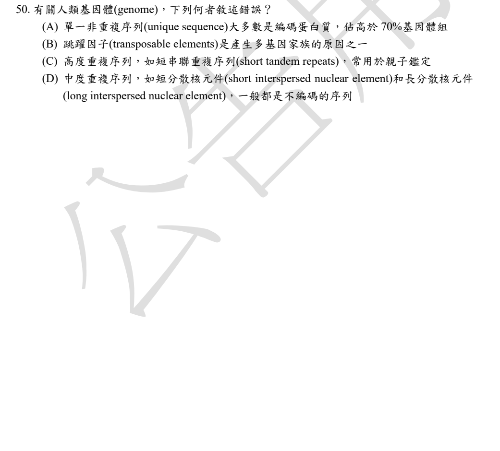
原卷PDF9 · 官方原答案PDF4 · 已核對生物釋疑PDF8–12
官方採計：A 原答案：A
未列於已取得113生物釋疑PDF8–12；依同年度原答案PDF4採計
主分類：Ch21 Genomes and Their Evolution
21.3 / Gene Density and Noncoding DNA
目錄行1320；條目起始印刷頁449；實際目錄 PDF40
次分類：Ch21 Genomes and Their Evolution
21.4 / Transposable Elements and Related Sequences
目錄行1327；條目起始印刷頁451；實際目錄 PDF40
次分類：Ch21 Genomes and Their Evolution
21.4 / Other Repetitive DNA, Including Simple Sequence DNA
目錄行1330；條目起始印刷頁452；實際目錄 PDF40
次分類：Ch21 Genomes and Their Evolution
21.5 / How Transposable Elements Contribute to Genome Evolution
目錄行1352；條目起始印刷頁459；實際目錄 PDF40
次分類：Ch20 DNA Tools and Biotechnology
20.4 / Forensic Evidence and Genetic Profiles
目錄行1277；條目起始印刷頁436；實際目錄 PDF40
主分類理由：人類基因密度及非編碼DNA比例是判斷A的直接核心，主歸21.3 Gene Density and Noncoding DNA。
次分類理由：同章轉位元件、其他重複序列及其演化作用均保留最小條目；20.4遺傳指紋支援STR親子鑑定。
科學說明：採A。人類大量DNA不編碼蛋白；本地12e圖21.6把蛋白編碼及rRNA/tRNA外顯子合計約1.5%，不能改寫成單一非重複序列70%以上都編蛋白。LINE/SINE多為非功能性或非編碼拷貝，但部分完整LINE保留蛋白編碼能力，D需保留「一般」限定；轉位可帶動重組與基因複製。
來源涵蓋範圍：Campbell正文支援分類原理；原題與官方釋疑的假設、資料及措辭限制另見科學說明。
教材正文：印刷449／PDF498、印刷450／PDF499、印刷451／PDF500、印刷452／PDF501、印刷459／PDF508、印刷436／PDF485、印刷437／PDF486
補充來源：不需另加課本外具名機制來源
另行比較：非編碼DNA是否都能製作轉位酶；1.5%是否專指蛋白？
449–452、459、436–437頁直接比較非編碼、轉位與STR；圖21.6的1.5%包含蛋白及rRNA/tRNA編碼外顯子，保留原題近似與來源範圍。A稱unique序列大多編碼蛋白且占基因體超過70%錯，但不否認部分自主轉位元件能編碼酵素。
結論：證據確認，分類疑義已解決。完整覆核紀錄
目前篩選沒有符合的題目；本年度總數仍為50題。
補充來源
查證日期：2026-09-08。使用原始研究摘要及官方資料，不宣稱所有出版商全文已取得。詳細界線見來源紀錄。
- S01 Martinez et al. Single-stranded antisense siRNAs guide target RNA cleavage in RNAi (2002)
RISC的單股反義guide及單股siRNA實驗，支持區分輸入雙股/前體與作用鏈。
原始來源1 · 原始來源2 - S02 OpenStax: urine formation and renal blood flow
腎絲球靜水壓促進濾出，鮑氏囊壓及血漿膠體滲透壓抵抗；其他條件適當時入球擴張提高血流與GFR。
原始來源1 · 原始來源2 - S03 OpenStax Anatomy and Physiology 2e: Disorders of Acid-Base Balance
呼吸性酸中毒的腎性代償增加HCO3−保留及H+分泌；恢復通氣與典型代償層次分開。
原始來源1 - S04 OpenStax: Organs and Structures of the Respiratory System
第二型肺泡細胞分泌surfactant，第一型形成薄氣體交換面。
原始來源1 - S05 ATSDR Toxicological Profile for Nitrate and Nitrite (2017)
亞硝酸鹽氧化Hb鐵形成MetHb，影響正常攜氧。
原始來源1 · 原始來源2 - S06 Hascall and Esko: Hyaluronan, Essentials of Glycobiology 2e
玻尿酸由GlcA與GlcNAc交替組成重複雙糖，補足Campbell未具名的異質多醣例。
原始來源1 - S07 Sun, Beilke and Lanier: Adaptive immune features of natural killer cells (2009)
小鼠CMV特定Ly49H+ NK細胞有長期存留及再次挑戰保護反應，反駁NK絕無特異性記憶的普遍斷言。
原始來源1 - S08 Salmonella acid tolerance and macrophage survival: Lee et al. (1994), Buchmeier and Heffron (1991)
耐酸反應及干擾巨噬細胞內運輸的原始實驗；抵抗清除不等於不被吞噬，也不泛化所有條件完全無胞器融合。
原始來源1 · 原始來源2 · 原始來源3 - S09 Alwine, Kemp and Stark: RNA detection by transfer and hybridization (1977)
分離RNA、轉膜及探針雜交是Northern的原始方法依據，與直接PCR測DNA分開。
原始來源1 - S10 Hengartner and Horvitz: C. elegans ced-9 is a functional homolog of mammalian bcl-2 (1994)
Ced-9/Bcl-2同源及Bcl-2促細胞存活實驗支持凋亡調節家族；不把TNF受體說成完全不參與。
原始來源1 · 原始來源2 - S11 Fields and Song: yeast two-hybrid (1989); HuR and p37AUF1 FRET study (2007)
酵母雙雜交、共免疫沉澱相關方法與活/固定細胞FRET研究提供互作或近距離證據，與NGS核酸定序的直接測量對象不同。
原始來源1 · 原始來源2 - S12 Discrete regulation of beta-catenin-mediated transcription governs identity of intestinal epithelial stem cells (2021)
小鼠腸上皮幹細胞beta-catenin轉錄及相關cofactor實驗支援Wnt路徑框架，補足本地課本未查得的具名內容。
原始來源1 · 原始來源2 - S13 CDC Cold Versus Flu; rhinovirus STING and replication organelles (2022)
感冒不等同流感；鼻病毒利用細胞質膜相關複製胞器，不能把所有感冒病毒都視為必需核內複製。
原始來源1 · 原始來源2 - S14 UniProt official protein search documentation and developer publication (2025)
UniProt的核心為蛋白序列與功能資訊；本題不使用會變動的資料庫即時筆數。
原始來源1 · 原始來源2 - S15 Nurse Nobel lecture; p16 in senescent human fibroblasts (1996); cyclin D1 breast cancer study (2017)
Cdc2/CDK與cyclin形成調控複合體；p16及cyclinD1選項以具體細胞衰老和乳癌研究補足，不泛化所有老化細胞或所有癌症。
原始來源1 · 原始來源2 · 原始來源3 - S16 Daghlas and Rahimi: Biochemistry, Glycogen
肝醣多個非還原端促快速動員；肌肉缺乏G6Pase，肝醣主要供自身使用。
原始來源1 - S17 NIDDK LiverTox: Bile Acids
膽酸由肝臟膽固醇合成，補足Campbell膽鹽消化功能框架。
原始來源1 - S18 OpenStax Biology 2e: Antibodies and Disruptions in the Immune System
IgE參與過敏與抗寄生蠕蟲反應；不等於所有寄生蟲感染都必有IgE升高。
原始來源1 · 原始來源2